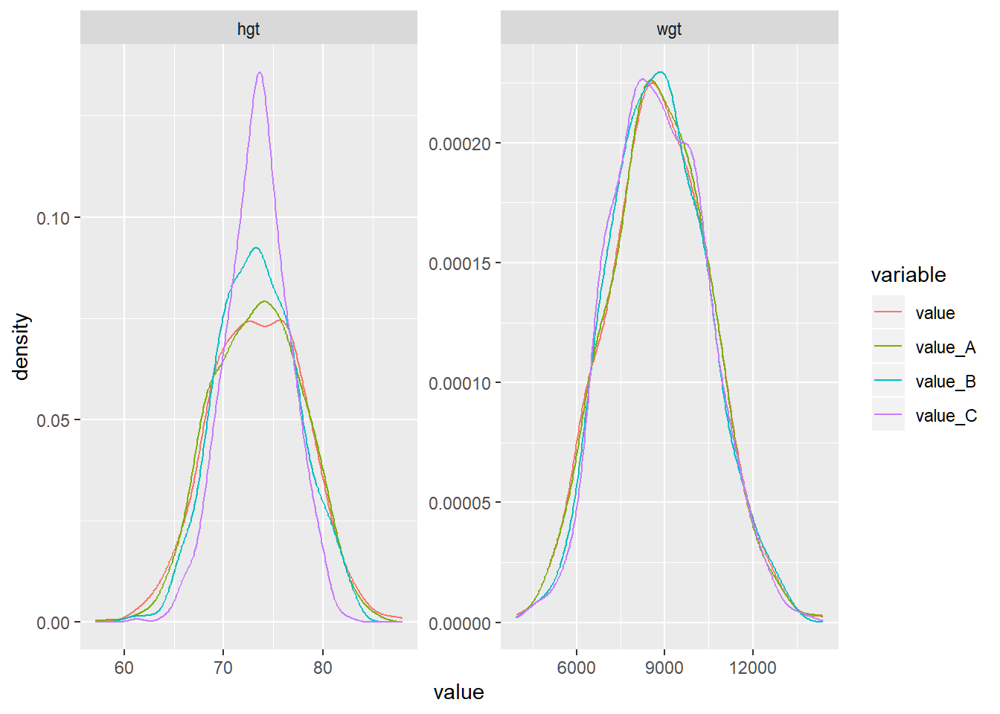
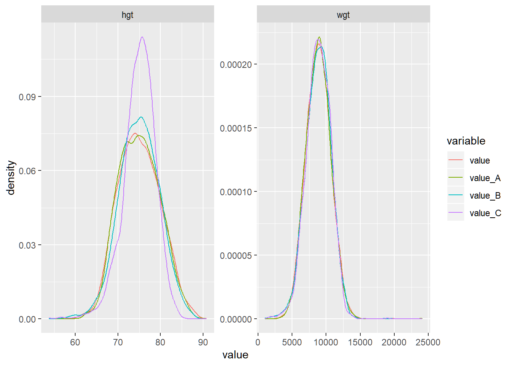
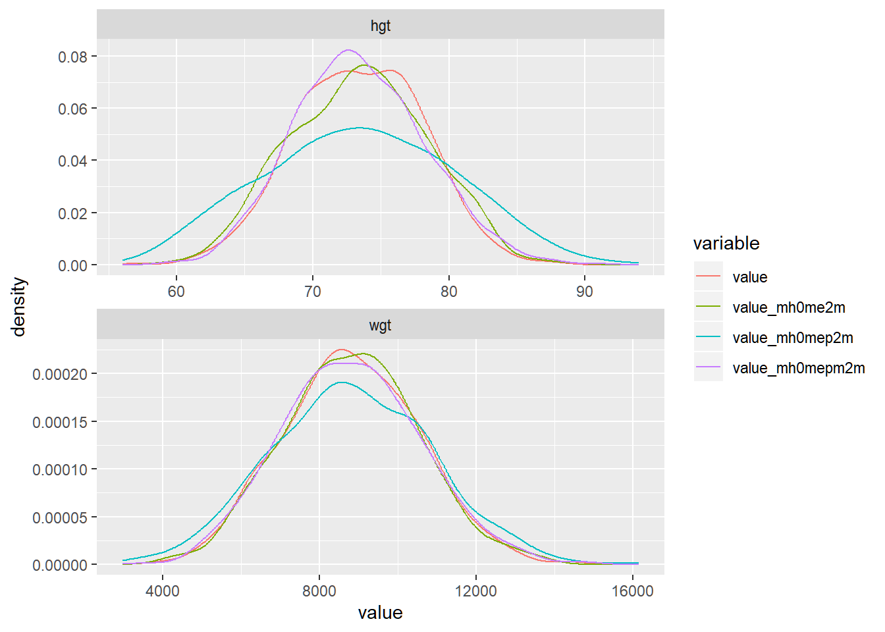

Chapter 5 Linear Regression
5.1 OLS and IV
Back to Fan’s R4Econ Homepage Table of Content
5.1.1 OLS and IV Regression
Go back to fan’s REconTools Package, R4Econ Repository, or Intro Stats with R Repository.
IV regression using AER package. Option to store all results in dataframe row for combining results from other estimations together. Produce Row Statistics.
5.1.1.1 Construct Program
# IV regression function
# The code below uses the AER library's regresison function
# All results are stored in a single row as data_frame
# This functoin could work with dplyr do
# var.y is single outcome, vars.x, vars.c and vars.z are vectors of endogenous variables, controls and instruments.
regf.iv <- function(var.y, vars.x, vars.c, vars.z, df, transpose=TRUE) {
# print(length(vars.z))
# A. Set-Up Equation
str.vars.x <- paste(vars.x, collapse='+')
str.vars.c <- paste(vars.c, collapse='+')
df <- df %>% select(one_of(var.y, vars.x, vars.c, vars.z)) %>% drop_na() %>% filter_all(all_vars(!is.infinite(.)))
if (length(vars.z) >= 1) {
# library(AER)
str.vars.z <- paste(vars.z, collapse='+')
equa.iv <- paste(var.y,
paste(paste(str.vars.x, str.vars.c, sep='+'),
paste(str.vars.z, str.vars.c, sep='+'),
sep='|'),
sep='~')
# print(equa.iv)
# B. IV Regression
ivreg.summ <- summary(ivreg(as.formula(equa.iv), data=df),
vcov = sandwich, df = Inf, diagnostics = TRUE)
# C. Statistics from IV Regression
# ivreg.summ$coef
# ivreg.summ$diagnostics
# D. Combine Regression Results into a Matrix
df.results <- suppressMessages(as_tibble(ivreg.summ$coef, rownames='rownames') %>%
full_join(as_tibble(ivreg.summ$diagnostics, rownames='rownames')) %>%
full_join(tibble(rownames=c('vars'),
var.y=var.y,
vars.x=str.vars.x,
vars.z=str.vars.z,
vars.c=str.vars.c)))
} else {
# OLS regression
equa.ols <- paste(var.y,
paste(paste(vars.x, collapse='+'),
paste(vars.c, collapse='+'), sep='+'),
sep='~')
lmreg.summ <- summary(lm(as.formula(equa.ols), data=df))
lm.diagnostics <- as_tibble(list(df1=lmreg.summ$df[[1]],
df2=lmreg.summ$df[[2]],
df3=lmreg.summ$df[[3]],
sigma=lmreg.summ$sigma,
r.squared=lmreg.summ$r.squared,
adj.r.squared=lmreg.summ$adj.r.squared)) %>%
gather(variable, value) %>%
rename(rownames = variable) %>%
rename(v = value)
df.results <- suppressMessages(as_tibble(lmreg.summ$coef, rownames='rownames') %>%
full_join(lm.diagnostics) %>%
full_join(tibble(rownames=c('vars'),
var.y=var.y,
vars.x=str.vars.x,
vars.c=str.vars.c)))
}
# E. Flatten Matrix, All IV results as a single tibble row to be combined with other IV results
df.row.results <- df.results %>%
gather(variable, value, -rownames) %>%
drop_na() %>%
unite(esti.val, rownames, variable) %>%
mutate(esti.val = gsub(' ', '', esti.val))
if (transpose) {
df.row.results <- df.row.results %>% spread(esti.val, value)
}
# F. Return
return(data.frame(df.row.results))
}5.1.1.2 Program Testing
Load Data
# Library
library(tidyverse)
library(AER)
# Load Sample Data
setwd('C:/Users/fan/R4Econ/_data/')
df <- read_csv('height_weight.csv')## Parsed with column specification:
## cols(
## S.country = col_character(),
## vil.id = col_double(),
## indi.id = col_double(),
## sex = col_character(),
## svymthRound = col_double(),
## momEdu = col_double(),
## wealthIdx = col_double(),
## hgt = col_double(),
## wgt = col_double(),
## hgt0 = col_double(),
## wgt0 = col_double(),
## prot = col_double(),
## cal = col_double(),
## p.A.prot = col_double(),
## p.A.nProt = col_double()
## )5.1.1.2.1 Example No Instrument, OLS
# One Instrucments
var.y <- c('hgt')
vars.x <- c('prot')
vars.z <- NULL
vars.c <- c('sex', 'hgt0', 'wgt0')
# Regression
regf.iv(var.y, vars.x, vars.c, vars.z, df, transpose=FALSE)## esti.val value
## 1 (Intercept)_Estimate 52.1186286658651
## 2 prot_Estimate 0.374472386357917
## 3 sexMale_Estimate 0.611043720578292
## 4 hgt0_Estimate 0.148513781160842
## 5 wgt0_Estimate 0.00150560230505631
## 6 (Intercept)_Std.Error 1.57770483608693
## 7 prot_Std.Error 0.00418121191133815
## 8 sexMale_Std.Error 0.118396259120659
## 9 hgt0_Std.Error 0.0393807494783186
## 10 wgt0_Std.Error 0.000187123663624397
## 11 (Intercept)_tvalue 33.0344608660332
## 12 prot_tvalue 89.5607288744356
## 13 sexMale_tvalue 5.16100529794248
## 14 hgt0_tvalue 3.77122790013449
## 15 wgt0_tvalue 8.04602836377991
## 16 (Intercept)_Pr(>|t|) 9.92126150975783e-233
## 17 prot_Pr(>|t|) 0
## 18 sexMale_Pr(>|t|) 2.48105505495642e-07
## 19 hgt0_Pr(>|t|) 0.000162939618371183
## 20 wgt0_Pr(>|t|) 9.05257561534111e-16
## 21 df1_v 5
## 22 df2_v 18958
## 23 df3_v 5
## 24 sigma_v 8.06197784622979
## 25 r.squared_v 0.319078711001325
## 26 adj.r.squared_v 0.318935041565942
## 27 vars_var.y hgt
## 28 vars_vars.x prot
## 29 vars_vars.c sex+hgt0+wgt05.1.1.2.2 Example 1 Insturment
# One Instrucments
var.y <- c('hgt')
vars.x <- c('prot')
vars.z <- c('momEdu')
vars.c <- c('sex', 'hgt0', 'wgt0')
# Regression
regf.iv(var.y, vars.x, vars.c, vars.z, df, transpose=FALSE)## Warning: attributes are not identical across measure variables;
## they will be dropped## esti.val value
## 1 (Intercept)_Estimate 43.4301969117558
## 2 prot_Estimate 0.130833343849446
## 3 sexMale_Estimate 0.868121847262411
## 4 hgt0_Estimate 0.412093881817148
## 5 wgt0_Estimate 0.000858630042617921
## 6 (Intercept)_Std.Error 1.82489550971182
## 7 prot_Std.Error 0.0192036220809189
## 8 sexMale_Std.Error 0.13373016700542
## 9 hgt0_Std.Error 0.0459431912927002
## 10 wgt0_Std.Error 0.00022691057702563
## 11 (Intercept)_zvalue 23.798730766023
## 12 prot_zvalue 6.81295139521853
## 13 sexMale_zvalue 6.49159323361366
## 14 hgt0_zvalue 8.96963990141069
## 15 wgt0_zvalue 3.7840018472164
## 16 (Intercept)_Pr(>|z|) 3.4423766196876e-125
## 17 prot_Pr(>|z|) 9.56164541643828e-12
## 18 sexMale_Pr(>|z|) 8.49333228172763e-11
## 19 hgt0_Pr(>|z|) 2.97485394526792e-19
## 20 wgt0_Pr(>|z|) 0.000154326676608523
## 21 Weakinstruments_df1 1
## 22 Wu-Hausman_df1 1
## 23 Sargan_df1 0
## 24 Weakinstruments_df2 16394
## 25 Wu-Hausman_df2 16393
## 26 Weakinstruments_statistic 935.817456612075
## 27 Wu-Hausman_statistic 123.595856606729
## 28 Weakinstruments_p-value 6.39714929178024e-200
## 29 Wu-Hausman_p-value 1.30703637796748e-28
## 30 vars_var.y hgt
## 31 vars_vars.x prot
## 32 vars_vars.z momEdu
## 33 vars_vars.c sex+hgt0+wgt05.1.1.2.3 Example Multiple Instrucments
# Multiple Instrucments
var.y <- c('hgt')
vars.x <- c('prot')
vars.z <- c('momEdu', 'wealthIdx', 'p.A.prot', 'p.A.nProt')
vars.c <- c('sex', 'hgt0', 'wgt0')
# Regression
regf.iv(var.y, vars.x, vars.c, vars.z, df, transpose=FALSE)## Warning: attributes are not identical across measure variables;
## they will be dropped## esti.val value
## 1 (Intercept)_Estimate 42.2437613555242
## 2 prot_Estimate 0.26699945194704
## 3 sexMale_Estimate 0.695548488812932
## 4 hgt0_Estimate 0.424954881263031
## 5 wgt0_Estimate 0.000486951420329484
## 6 (Intercept)_Std.Error 1.85356686789642
## 7 prot_Std.Error 0.0154939347964083
## 8 sexMale_Std.Error 0.133157977814374
## 9 hgt0_Std.Error 0.0463195803786233
## 10 wgt0_Std.Error 0.000224867994873235
## 11 (Intercept)_zvalue 22.7905246296649
## 12 prot_zvalue 17.2325142357597
## 13 sexMale_zvalue 5.22348341593581
## 14 hgt0_zvalue 9.17441129192849
## 15 wgt0_zvalue 2.16549901022595
## 16 (Intercept)_Pr(>|z|) 5.69294074735747e-115
## 17 prot_Pr(>|z|) 1.51424021931607e-66
## 18 sexMale_Pr(>|z|) 1.75588197502565e-07
## 19 hgt0_Pr(>|z|) 4.54048595587756e-20
## 20 wgt0_Pr(>|z|) 0.030349491114332
## 21 Weakinstruments_df1 4
## 22 Wu-Hausman_df1 1
## 23 Sargan_df1 3
## 24 Weakinstruments_df2 14914
## 25 Wu-Hausman_df2 14916
## 26 Weakinstruments_statistic 274.147084958343
## 27 Wu-Hausman_statistic 17.7562545747101
## 28 Sargan_statistic 463.729664547249
## 29 Weakinstruments_p-value 8.61731956233366e-228
## 30 Wu-Hausman_p-value 2.52567249124181e-05
## 31 Sargan_p-value 3.45452874915475e-100
## 32 vars_var.y hgt
## 33 vars_vars.x prot
## 34 vars_vars.z momEdu+wealthIdx+p.A.prot+p.A.nProt
## 35 vars_vars.c sex+hgt0+wgt05.1.1.2.4 Example Multiple Endogenous Variables
# Multiple Instrucments
var.y <- c('hgt')
vars.x <- c('prot', 'cal')
vars.z <- c('momEdu', 'wealthIdx', 'p.A.prot', 'p.A.nProt')
vars.c <- c('sex', 'hgt0', 'wgt0')
# Regression
regf.iv(var.y, vars.x, vars.c, vars.z, df, transpose=FALSE)## Warning: attributes are not identical across measure variables;
## they will be dropped## esti.val value
## 1 (Intercept)_Estimate 44.0243196254297
## 2 prot_Estimate -1.4025623247106
## 3 cal_Estimate 0.065104895750151
## 4 sexMale_Estimate 0.120832787571818
## 5 hgt0_Estimate 0.286525437984517
## 6 wgt0_Estimate 0.000850481389651033
## 7 (Intercept)_Std.Error 2.75354847244082
## 8 prot_Std.Error 0.198640060273635
## 9 cal_Std.Error 0.00758881298880996
## 10 sexMale_Std.Error 0.209984580636303
## 11 hgt0_Std.Error 0.0707828182888255
## 12 wgt0_Std.Error 0.00033711210444429
## 13 (Intercept)_zvalue 15.9882130516502
## 14 prot_zvalue -7.06082309267581
## 15 cal_zvalue 8.57906181719737
## 16 sexMale_zvalue 0.575436478267434
## 17 hgt0_zvalue 4.04795181812859
## 18 wgt0_zvalue 2.52284441418383
## 19 (Intercept)_Pr(>|z|) 1.54396598126854e-57
## 20 prot_Pr(>|z|) 1.65519210848649e-12
## 21 cal_Pr(>|z|) 9.56500648203187e-18
## 22 sexMale_Pr(>|z|) 0.564996139463599
## 23 hgt0_Pr(>|z|) 5.16677787108928e-05
## 24 wgt0_Pr(>|z|) 0.0116409892837831
## 25 Weakinstruments(prot)_df1 4
## 26 Weakinstruments(cal)_df1 4
## 27 Wu-Hausman_df1 2
## 28 Sargan_df1 2
## 29 Weakinstruments(prot)_df2 14914
## 30 Weakinstruments(cal)_df2 14914
## 31 Wu-Hausman_df2 14914
## 32 Weakinstruments(prot)_statistic 274.147084958343
## 33 Weakinstruments(cal)_statistic 315.036848606231
## 34 Wu-Hausman_statistic 94.7020085425169
## 35 Sargan_statistic 122.081979628898
## 36 Weakinstruments(prot)_p-value 8.61731956233366e-228
## 37 Weakinstruments(cal)_p-value 1.18918641220866e-260
## 38 Wu-Hausman_p-value 1.35024050408262e-41
## 39 Sargan_p-value 3.09196773720398e-27
## 40 vars_var.y hgt
## 41 vars_vars.x prot+cal
## 42 vars_vars.z momEdu+wealthIdx+p.A.prot+p.A.nProt
## 43 vars_vars.c sex+hgt0+wgt05.1.1.2.5 Examples Line by Line
The examples are just to test the code with different types of variables.
# Selecting Variables
var.y <- c('hgt')
vars.x <- c('prot', 'cal')
vars.z <- c('momEdu', 'wealthIdx', 'p.A.prot', 'p.A.nProt')
vars.c <- c('sex', 'hgt0', 'wgt0')# A. create Equation
str.vars.x <- paste(vars.x, collapse='+')
str.vars.c <- paste(vars.c, collapse='+')
str.vars.z <- paste(vars.z, collapse='+')
print(str.vars.x)## [1] "prot+cal"## [1] "sex+hgt0+wgt0"## [1] "momEdu+wealthIdx+p.A.prot+p.A.nProt"equa.iv <- paste(var.y,
paste(paste(str.vars.x, str.vars.c, sep='+'),
paste(str.vars.z, str.vars.c, sep='+'),
sep='|'),
sep='~')
print(equa.iv)## [1] "hgt~prot+cal+sex+hgt0+wgt0|momEdu+wealthIdx+p.A.prot+p.A.nProt+sex+hgt0+wgt0"## (Intercept) prot cal sexMale hgt0 wgt0
## 44.0243196254 -1.4025623247 0.0651048958 0.1208327876 0.2865254380 0.0008504814# C. Regression Summary
ivreg.summ <- summary(res.ivreg, vcov = sandwich, df = Inf, diagnostics = TRUE)
ivreg.summ$coef## Estimate Std. Error z value Pr(>|z|)
## (Intercept) 44.0243196254 2.7535484724 15.9882131 1.543966e-57
## prot -1.4025623247 0.1986400603 -7.0608231 1.655192e-12
## cal 0.0651048958 0.0075888130 8.5790618 9.565006e-18
## sexMale 0.1208327876 0.2099845806 0.5754365 5.649961e-01
## hgt0 0.2865254380 0.0707828183 4.0479518 5.166778e-05
## wgt0 0.0008504814 0.0003371121 2.5228444 1.164099e-02
## attr(,"df")
## [1] 0## df1 df2 statistic p-value
## Weak instruments (prot) 4 14914 274.14708 8.617320e-228
## Weak instruments (cal) 4 14914 315.03685 1.189186e-260
## Wu-Hausman 2 14914 94.70201 1.350241e-41
## Sargan 2 NA 122.08198 3.091968e-27# D. Combine Regression Results into a Matrix
df.results <- suppressMessages(as_tibble(ivreg.summ$coef, rownames='rownames') %>%
full_join(as_tibble(ivreg.summ$diagnostics, rownames='rownames')) %>%
full_join(tibble(rownames=c('vars'),
var.y=var.y,
vars.x=str.vars.x,
vars.z=str.vars.z,
vars.c=str.vars.c)))
# E. Flatten Matrix, All IV results as a single tibble row to be combined with other IV results
df.row.results <- df.results %>%
gather(variable, value, -rownames) %>%
drop_na() %>%
unite(esti.val, rownames, variable) %>%
mutate(esti.val = gsub(' ', '', esti.val))## Warning: attributes are not identical across measure variables;
## they will be dropped## # A tibble: 43 x 2
## esti.val value
## <chr> <chr>
## 1 (Intercept)_Estimate 44.0243196254297
## 2 prot_Estimate -1.4025623247106
## 3 cal_Estimate 0.065104895750151
## 4 sexMale_Estimate 0.120832787571818
## 5 hgt0_Estimate 0.286525437984517
## 6 wgt0_Estimate 0.000850481389651033
## 7 (Intercept)_Std.Error 2.75354847244082
## 8 prot_Std.Error 0.198640060273635
## 9 cal_Std.Error 0.00758881298880996
## 10 sexMale_Std.Error 0.209984580636303
## # ... with 33 more rows## # A tibble: 43 x 2
## esti.val value
## <chr> <chr>
## 1 (Intercept)_Estimate 44.0243196254297
## 2 prot_Estimate -1.4025623247106
## 3 cal_Estimate 0.065104895750151
## 4 sexMale_Estimate 0.120832787571818
## 5 hgt0_Estimate 0.286525437984517
## 6 wgt0_Estimate 0.000850481389651033
## 7 (Intercept)_Std.Error 2.75354847244082
## 8 prot_Std.Error 0.198640060273635
## 9 cal_Std.Error 0.00758881298880996
## 10 sexMale_Std.Error 0.209984580636303
## # ... with 33 more rows## # A tibble: 1 x 43
## `(Intercept)_Es~ `(Intercept)_Pr~ `(Intercept)_St~ `(Intercept)_zv~ cal_Estimate `cal_Pr(>|z|)`
## <chr> <chr> <chr> <chr> <chr> <chr>
## 1 44.0243196254297 1.5439659812685~ 2.75354847244082 15.9882130516502 0.065104895~ 9.56500648203~
## # ... with 37 more variables: cal_Std.Error <chr>, cal_zvalue <chr>, hgt0_Estimate <chr>,
## # `hgt0_Pr(>|z|)` <chr>, hgt0_Std.Error <chr>, hgt0_zvalue <chr>, prot_Estimate <chr>,
## # `prot_Pr(>|z|)` <chr>, prot_Std.Error <chr>, prot_zvalue <chr>, Sargan_df1 <chr>,
## # `Sargan_p-value` <chr>, Sargan_statistic <chr>, sexMale_Estimate <chr>,
## # `sexMale_Pr(>|z|)` <chr>, sexMale_Std.Error <chr>, sexMale_zvalue <chr>, vars_var.y <chr>,
## # vars_vars.c <chr>, vars_vars.x <chr>, vars_vars.z <chr>, `Weakinstruments(cal)_df1` <chr>,
## # `Weakinstruments(cal)_df2` <chr>, `Weakinstruments(cal)_p-value` <chr>,
## # `Weakinstruments(cal)_statistic` <chr>, `Weakinstruments(prot)_df1` <chr>,
## # `Weakinstruments(prot)_df2` <chr>, `Weakinstruments(prot)_p-value` <chr>,
## # `Weakinstruments(prot)_statistic` <chr>, wgt0_Estimate <chr>, `wgt0_Pr(>|z|)` <chr>,
## # wgt0_Std.Error <chr>, wgt0_zvalue <chr>, `Wu-Hausman_df1` <chr>, `Wu-Hausman_df2` <chr>,
## # `Wu-Hausman_p-value` <chr>, `Wu-Hausman_statistic` <chr>5.1.2 IV Loop over RHS
Go back to fan’s REconTools Package, R4Econ Repository, or Intro Stats with R Repository.
Regression with a Variety of Outcome Variables and Right Hand Side Variables. There are M outcome variables, and there are N alternative right hand side variables. Regress each M outcome variable and each N alternative right hand side variable, with some common sets of controls and perhaps shared instruments. The output file is a M by N matrix of coefficients, with proper variable names and row names. The matrix stores coefficients for this key endogenous variable.
- Dependency: R4Econ/linreg/ivreg/ivregdfrow.R
5.1.2.1 Construct Program
The program relies on double lapply. lapply is used for convenience, not speed.
ff_reg_mbyn <- function(list.vars.y, list.vars.x,
vars.c, vars.z, df,
return_all = FALSE,
stats_ends = 'value', time = FALSE) {
# regf.iv() function is from C:\Users\fan\R4Econ\linreg\ivreg\ivregdfrow.R
if (time) {
start_time <- Sys.time()
}
if (return_all) {
df.reg.out.all <- bind_rows(lapply(list.vars.x,
function(x) (
bind_rows(lapply(list.vars.y, regf.iv, vars.x=x, vars.c=vars.c, vars.z=vars.z, df=df))
)))
} else {
df.reg.out.all <- (lapply(list.vars.x,
function(x) (
bind_rows(lapply(list.vars.y, regf.iv, vars.x=x, vars.c=vars.c, vars.z=vars.z, df=df)) %>%
select(vars_var.y, starts_with(x)) %>%
select(vars_var.y, ends_with(stats_ends))
))) %>% reduce(full_join)
}
if (time) {
end_time <- Sys.time()
print(paste0('Estimation for all ys and xs took (seconds):', end_time - start_time))
}
return(df.reg.out.all)
}5.1.2.2 Prepare Data
# Library
library(tidyverse)
library(AER)
# Load Sample Data
setwd('C:/Users/fan/R4Econ/_data/')
df <- read_csv('height_weight.csv')## Parsed with column specification:
## cols(
## S.country = col_character(),
## vil.id = col_double(),
## indi.id = col_double(),
## sex = col_character(),
## svymthRound = col_double(),
## momEdu = col_double(),
## wealthIdx = col_double(),
## hgt = col_double(),
## wgt = col_double(),
## hgt0 = col_double(),
## wgt0 = col_double(),
## prot = col_double(),
## cal = col_double(),
## p.A.prot = col_double(),
## p.A.nProt = col_double()
## )# Source Dependency
source('C:/Users/fan/R4Econ/linreg/ivreg/ivregdfrow.R')
# Setting
options(repr.matrix.max.rows=50, repr.matrix.max.cols=50)Parameters.
var.y1 <- c('hgt')
var.y2 <- c('wgt')
var.y3 <- c('vil.id')
list.vars.y <- c(var.y1, var.y2, var.y3)
var.x1 <- c('prot')
var.x2 <- c('cal')
var.x3 <- c('wealthIdx')
var.x4 <- c('p.A.prot')
var.x5 <- c('p.A.nProt')
list.vars.x <- c(var.x1, var.x2, var.x3, var.x4, var.x5)
vars.z <- c('indi.id')
vars.c <- c('sex', 'wgt0', 'hgt0', 'svymthRound')5.1.2.3 Program Testing
5.1.2.3.1 Test Program OLS Z-Stat
vars.z <- NULL
suppressMessages(ff_reg_mbyn(list.vars.y, list.vars.x,
vars.c, vars.z, df,
return_all = FALSE,
stats_ends = 'value'))## vars_var.y prot_tvalue cal_tvalue wealthIdx_tvalue p.A.prot_tvalue p.A.nProt_tvalue
## 1 hgt 18.8756010031786 23.4421863484661 13.508899618216 3.83682180045518 32.5448257554855
## 2 wgt 16.3591125056062 17.3686031309332 14.1390521528113 1.36958319982295 12.0961557911467
## 3 vil.id -14.9385580468907 -19.6150110809452 34.0972558327347 8.45943342783186 17.78014224214195.1.2.3.2 Test Program IV T-stat
vars.z <- c('indi.id')
suppressMessages(ff_reg_mbyn(list.vars.y, list.vars.x,
vars.c, vars.z, df,
return_all = FALSE,
stats_ends = 'value'))## Warning: attributes are not identical across measure variables;
## they will be dropped
## Warning: attributes are not identical across measure variables;
## they will be dropped
## Warning: attributes are not identical across measure variables;
## they will be dropped
## Warning: attributes are not identical across measure variables;
## they will be dropped
## Warning: attributes are not identical across measure variables;
## they will be dropped
## Warning: attributes are not identical across measure variables;
## they will be dropped
## Warning: attributes are not identical across measure variables;
## they will be dropped
## Warning: attributes are not identical across measure variables;
## they will be dropped
## Warning: attributes are not identical across measure variables;
## they will be dropped
## Warning: attributes are not identical across measure variables;
## they will be dropped
## Warning: attributes are not identical across measure variables;
## they will be dropped
## Warning: attributes are not identical across measure variables;
## they will be dropped
## Warning: attributes are not identical across measure variables;
## they will be dropped
## Warning: attributes are not identical across measure variables;
## they will be dropped
## Warning: attributes are not identical across measure variables;
## they will be dropped## vars_var.y prot_zvalue cal_zvalue wealthIdx_zvalue p.A.prot_zvalue
## 1 hgt 8.87674929300964 12.0739764947235 4.62589553677969 26.6373587567312
## 2 wgt 5.60385871756365 6.1225187008946 5.17869536991717 11.9295584469998
## 3 vil.id -9.22106223347162 -13.0586007975839 -51.5866689219593 -29.9627476577329
## p.A.nProt_zvalue
## 1 32.1162192385744
## 2 12.3509307017263
## 3 -38.35288946207075.1.2.3.3 Test Program OLS Coefficient
vars.z <- NULL
suppressMessages(ff_reg_mbyn(list.vars.y, list.vars.x,
vars.c, vars.z, df,
return_all = FALSE,
stats_ends = 'Estimate'))## vars_var.y prot_Estimate cal_Estimate wealthIdx_Estimate p.A.prot_Estimate
## 1 hgt 0.049431093806755 0.00243408846205622 0.21045655488185 3.86952250259526e-05
## 2 wgt 16.5557424523585 0.699072500364623 106.678721085969 0.00521731297924587
## 3 vil.id -0.0758835879205584 -0.00395676177098486 0.451733304543324 0.000149388430455142
## p.A.nProt_Estimate
## 1 0.00542428867316449
## 2 0.779514232050632
## 3 0.005262375555810245.1.2.3.4 Test Program IV coefficient
vars.z <- c('indi.id')
suppressMessages(ff_reg_mbyn(list.vars.y, list.vars.x,
vars.c, vars.z, df,
return_all = FALSE,
stats_ends = 'Estimate'))## Warning: attributes are not identical across measure variables;
## they will be dropped
## Warning: attributes are not identical across measure variables;
## they will be dropped
## Warning: attributes are not identical across measure variables;
## they will be dropped
## Warning: attributes are not identical across measure variables;
## they will be dropped
## Warning: attributes are not identical across measure variables;
## they will be dropped
## Warning: attributes are not identical across measure variables;
## they will be dropped
## Warning: attributes are not identical across measure variables;
## they will be dropped
## Warning: attributes are not identical across measure variables;
## they will be dropped
## Warning: attributes are not identical across measure variables;
## they will be dropped
## Warning: attributes are not identical across measure variables;
## they will be dropped
## Warning: attributes are not identical across measure variables;
## they will be dropped
## Warning: attributes are not identical across measure variables;
## they will be dropped
## Warning: attributes are not identical across measure variables;
## they will be dropped
## Warning: attributes are not identical across measure variables;
## they will be dropped
## Warning: attributes are not identical across measure variables;
## they will be dropped## vars_var.y prot_Estimate cal_Estimate wealthIdx_Estimate p.A.prot_Estimate
## 1 hgt 0.859205733632614 0.0238724384575419 0.144503490136948 0.00148073028434642
## 2 wgt 98.9428234201406 2.71948246216953 69.1816142883022 0.221916473012486
## 3 vil.id -6.02451379136132 -0.168054407187466 -1.91414470908345 -0.00520794333267238
## p.A.nProt_Estimate
## 1 0.0141317656200726
## 2 2.11856940494335
## 3 -0.04944688777421095.1.2.3.5 Test Program OLS Return All
vars.z <- NULL
ff_reg_mbyn(list.vars.y, list.vars.x,
vars.c, vars.z, df,
return_all = TRUE,
stats_ends = 'Estimate')## X.Intercept._Estimate X.Intercept._Pr...t.. X.Intercept._Std.Error X.Intercept._tvalue
## 1 27.3528514188608 5.68247182214952e-231 0.831272666092284 32.9047886867776
## 2 99.873884728925 0.75529705553815 320.450650378664 0.31166697465244
## 3 31.4646660224049 6.78164655340399e-84 1.61328519718754 19.503474077155
## 4 27.9038445914729 8.24252673989353e-242 0.828072565159449 33.6973421962119
## 5 219.626705179399 0.493216914827181 320.522532223672 0.685214557790078
## 6 30.5103987898551 1.62608789535248e-79 1.60831193651104 18.9704485163756
## 7 35.7840188807906 2.26726906489443e-145 1.38461348429899 25.8440491058106
## 8 -2662.74787734003 7.13318862990131e-05 670.301542938561 -3.97246270039407
## 9 29.2381039651127 1.53578035267873e-124 1.22602177264147 23.8479483950102
## 10 23.9948407749744 2.11912344053336e-165 0.86658104216672 27.6890903532576
## 11 -547.959546430028 0.0941551350855875 327.343126852912 -1.6739607509042
## 12 22.3367814226238 3.04337266226599e-49 1.5098937308759 14.7936116071335
## 13 24.4904444950827 2.34941965806705e-181 0.843371070670838 29.0387533397398
## 14 -476.703973630552 0.143844033032183 326.132837036936 -1.46168652614567
## 15 22.7781908464511 9.58029450711211e-52 1.5004526558957 15.1808794212527
## adj.r.squared_v df1_v df2_v df3_v hgt0_Estimate hgt0_Pr...t.. hgt0_Std.Error
## 1 0.814249026159781 6 18957 6 0.60391817340617 1.14533314566771e-183 0.0206657538633713
## 2 0.60716936506893 6 18962 6 56.3852027199184 1.52417506966835e-12 7.96735224000553
## 3 0.0373247512680971 6 18999 6 -0.296844389234445 1.40290395213743e-13 0.0401060913799595
## 4 0.81608922805658 6 18957 6 0.589847843438394 7.79174951119325e-177 0.0205836398278421
## 5 0.607863678511207 6 18962 6 52.9707041800704 3.05720143843395e-11 7.96822145797115
## 6 0.0453498711076042 6 18999 6 -0.273219210757899 8.49149153665126e-12 0.0399777363511633
## 7 0.935014931990565 6 25092 6 0.439374451256039 2.71000479249152e-36 0.0348701896610764
## 8 0.92193683733695 6 25102 6 47.176969664749 0.00520266507060071 16.8823489375743
## 9 0.059543122812776 6 30013 6 -0.35908163982046 2.41020063623865e-31 0.0307984635553859
## 10 0.814690803458616 6 18587 6 0.687269209411865 1.31914432912869e-220 0.0213841849324282
## 11 0.617300597776144 6 18591 6 72.105560623359 4.78613024244006e-19 8.07744906400683
## 12 0.0261131074199838 6 18845 6 -0.108789161111504 0.0034801146146182 0.0372288594891345
## 13 0.824542352656376 6 18587 6 0.622395388389206 1.11511327164938e-190 0.0208846437570215
## 14 0.620250730454724 6 18591 6 62.7336220289257 8.38546282719268e-15 8.07589192978212
## 15 0.0385437355117917 6 18845 6 -0.157811627494693 2.13723119924676e-05 0.0371223237183417
## hgt0_tvalue prot_Estimate prot_Pr...t.. prot_Std.Error prot_tvalue
## 1 29.2231378249683 0.049431093806755 9.54769322304645e-79 0.00261878251179557 18.8756010031786
## 2 7.0770314931977 16.5557424523585 9.61203373222183e-60 1.01201959743751 16.3591125056062
## 3 -7.40147890309685 -0.0758835879205584 3.56396093562335e-50 0.00507971302734622 -14.9385580468907
## 4 28.6561486875877 <NA> <NA> <NA> <NA>
## 5 6.64774497790599 <NA> <NA> <NA> <NA>
## 6 -6.83428417151858 <NA> <NA> <NA> <NA>
## 7 12.6002885423502 <NA> <NA> <NA> <NA>
## 8 2.79445531182864 <NA> <NA> <NA> <NA>
## 9 -11.659076407325 <NA> <NA> <NA> <NA>
## 10 32.1391351404584 <NA> <NA> <NA> <NA>
## 11 8.92677379355593 <NA> <NA> <NA> <NA>
## 12 -2.92217281443323 <NA> <NA> <NA> <NA>
## 13 29.8015803204665 <NA> <NA> <NA> <NA>
## 14 7.76801157994423 <NA> <NA> <NA> <NA>
## 15 -4.25112470577158 <NA> <NA> <NA> <NA>
## r.squared_v sexMale_Estimate sexMale_Pr...t.. sexMale_Std.Error sexMale_tvalue
## 1 0.814298005954592 0.935177182449406 2.36432111724607e-51 0.0618482294097262 15.1205166481668
## 2 0.607272921412825 415.163616765357 2.48252880290814e-67 23.8518341439675 17.4059409544552
## 3 0.0375780335372857 -0.254089999175318 0.0343768259467621 0.120093045309631 -2.11577613441484
## 4 0.816137722617266 0.893484662055608 2.08765935335877e-47 0.0616078355613525 14.5027763743757
## 5 0.60796705182314 405.534891838028 2.51355675686752e-64 23.8567507583516 16.9987478993157
## 6 0.0456010419476623 -0.181389489610951 0.129768754080748 0.11972270545355 -1.51508010885476
## 7 0.93502787877066 1.80682463132073 1.26527362032354e-66 0.104475287357902 17.2942776901016
## 8 0.921952383432195 999.926876716707 2.64630894140004e-86 50.5879876531386 19.7660931597596
## 9 0.0596997716363463 -0.33436777751525 0.000311174554787706 0.0927193334338799 -3.60623577771614
## 10 0.814740639193486 0.932686930233136 7.90489020586094e-47 0.0647209948973267 14.4108867873979
## 11 0.617403496088206 397.141948675354 6.19449742677662e-59 24.4473730956481 16.2447698213453
## 12 0.0263714328556815 -0.445232370681998 7.93666802281971e-05 0.112797805327952 -3.94717228218682
## 13 0.824589538985803 0.96466980500711 1.24556615236597e-52 0.0629827627260302 15.316409812052
## 14 0.620352835549783 401.59056368102 1.18469030741261e-60 24.3549086073387 16.4891016491029
## 15 0.0387987636986586 -0.423829627017582 0.00015644693636154 0.112083516545945 -3.78137339083082
## sigma_v svymthRound_Estimate svymthRound_Pr...t.. svymthRound_Std.Error
## 1 4.21029844914315 0.87166589100565 0 0.00387681209575621
## 2 1623.77111076428 189.04290688382 0 1.4955473831309
## 3 8.18491760066961 -0.0154759587993917 0.0397984032097113 0.00752730297891317
## 4 4.18939119979502 0.851989049736817 0 0.00411253488213795
## 5 1622.33549880859 185.318286001897 0 1.59266949679221
## 6 8.15073036560541 0.0201471237605442 0.0117151185126433 0.00799217807522278
## 7 8.18607049768594 0.432815253441723 0 0.000728323735328998
## 8 3964.45339913597 189.877994795061 0 0.352701518968252
## 9 7.93450742809862 0.00215144302579706 0.000447277200167272 0.000612792699568233
## 10 4.35662621773428 0.91961467696139 0 0.00331108017589107
## 11 1645.77655955938 205.597385664745 0 1.25083486490652
## 12 7.6435668370875 -0.0509574460702806 1.37139389802397e-18 0.00578476859618168
## 13 4.23923961592693 0.921894094780682 0 0.00317113547025635
## 14 1639.42085007515 205.945143306004 0 1.22639878616071
## 15 7.59462918474114 -0.0557204455206461 7.79141497751766e-23 0.00565696328562864
## svymthRound_tvalue vars_var.y vars_vars.c vars_vars.x wgt0_Estimate
## 1 224.840892330022 hgt sex+wgt0+hgt0+svymthRound prot -0.000146104685986986
## 2 126.403823119306 wgt sex+wgt0+hgt0+svymthRound prot 0.637023553461055
## 3 -2.05597660181154 vil.id sex+wgt0+hgt0+svymthRound prot -0.000903390591533867
## 4 207.168832400006 hgt sex+wgt0+hgt0+svymthRound cal -0.000116898230009949
## 5 116.357025971267 wgt sex+wgt0+hgt0+svymthRound cal 0.649394003614758
## 6 2.52085521254888 vil.id sex+wgt0+hgt0+svymthRound cal -0.000941137072743919
## 7 594.262183761197 hgt sex+wgt0+hgt0+svymthRound wealthIdx 0.00122231975126219
## 8 538.353209678558 wgt sex+wgt0+hgt0+svymthRound wealthIdx 1.32870822160235
## 9 3.51088227277012 vil.id sex+wgt0+hgt0+svymthRound wealthIdx -0.000845938526704796
## 10 277.738571133786 hgt sex+wgt0+hgt0+svymthRound p.A.prot -0.000489534836079617
## 11 164.368128386085 wgt sex+wgt0+hgt0+svymthRound p.A.prot 0.580023505722658
## 12 -8.80889965139067 vil.id sex+wgt0+hgt0+svymthRound p.A.prot -0.00156196911156061
## 13 290.714194782148 hgt sex+wgt0+hgt0+svymthRound p.A.nProt 3.23596154259101e-05
## 14 167.926734460268 wgt sex+wgt0+hgt0+svymthRound p.A.nProt 0.65551206304675
## 15 -9.84988636256528 vil.id sex+wgt0+hgt0+svymthRound p.A.nProt -0.00115432723977403
## wgt0_Pr...t.. wgt0_Std.Error wgt0_tvalue cal_Estimate
## 1 0.136011583497549 9.79994437486573e-05 -1.49087260496811 <NA>
## 2 2.96480083692757e-63 0.0378027371614794 16.8512547316329 <NA>
## 3 2.05763549729273e-06 0.000190221503167431 -4.74915073475531 <NA>
## 4 0.230228828649018 9.74307633896921e-05 -1.19980821193398 0.00243408846205622
## 5 7.43034302413852e-66 0.037739875283113 17.2071051836606 0.699072500364623
## 6 6.66901196231733e-07 0.000189270503626621 -4.97244448929308 -0.00395676177098486
## 7 1.22269348058816e-13 0.000164767846917989 7.41843614592224 <NA>
## 8 6.75367630221077e-62 0.0798131859486402 16.6477281392748 <NA>
## 9 4.32675510884621e-09 0.000144040382619518 -5.872926128913 <NA>
## 10 7.77000489086602e-07 9.90410500454311e-05 -4.94274682926991 <NA>
## 11 7.42419220783427e-54 0.0374185042114355 15.5009805428138 <NA>
## 12 1.40362012201826e-19 0.000172365145002826 -9.0619777654873 <NA>
## 13 0.740027016459552 9.75208524392668e-05 0.331822524275644 <NA>
## 14 4.09082062947785e-67 0.0377202854835204 17.3782370584956 <NA>
## 15 2.75472781728448e-11 0.000173241059789276 -6.66312732777158 <NA>
## cal_Pr...t.. cal_Std.Error cal_tvalue wealthIdx_Estimate
## 1 <NA> <NA> <NA> <NA>
## 2 <NA> <NA> <NA> <NA>
## 3 <NA> <NA> <NA> <NA>
## 4 8.01672708877986e-120 0.000103833679413418 23.4421863484661 <NA>
## 5 4.71331900885298e-67 0.0402492068645167 17.3686031309332 <NA>
## 6 7.94646124029527e-85 0.000201721108117477 -19.6150110809452 <NA>
## 7 <NA> <NA> <NA> 0.21045655488185
## 8 <NA> <NA> <NA> 106.678721085969
## 9 <NA> <NA> <NA> 0.451733304543324
## 10 <NA> <NA> <NA> <NA>
## 11 <NA> <NA> <NA> <NA>
## 12 <NA> <NA> <NA> <NA>
## 13 <NA> <NA> <NA> <NA>
## 14 <NA> <NA> <NA> <NA>
## 15 <NA> <NA> <NA> <NA>
## wealthIdx_Pr...t.. wealthIdx_Std.Error wealthIdx_tvalue p.A.prot_Estimate
## 1 <NA> <NA> <NA> <NA>
## 2 <NA> <NA> <NA> <NA>
## 3 <NA> <NA> <NA> <NA>
## 4 <NA> <NA> <NA> <NA>
## 5 <NA> <NA> <NA> <NA>
## 6 <NA> <NA> <NA> <NA>
## 7 1.93494257274268e-41 0.0155791042075745 13.508899618216 <NA>
## 8 3.2548345535026e-45 7.54496977117083 14.1390521528113 <NA>
## 9 4.82890644822007e-250 0.0132483771350785 34.0972558327347 <NA>
## 10 <NA> <NA> <NA> 3.86952250259526e-05
## 11 <NA> <NA> <NA> 0.00521731297924587
## 12 <NA> <NA> <NA> 0.000149388430455142
## 13 <NA> <NA> <NA> <NA>
## 14 <NA> <NA> <NA> <NA>
## 15 <NA> <NA> <NA> <NA>
## p.A.prot_Pr...t.. p.A.prot_Std.Error p.A.prot_tvalue p.A.nProt_Estimate
## 1 <NA> <NA> <NA> <NA>
## 2 <NA> <NA> <NA> <NA>
## 3 <NA> <NA> <NA> <NA>
## 4 <NA> <NA> <NA> <NA>
## 5 <NA> <NA> <NA> <NA>
## 6 <NA> <NA> <NA> <NA>
## 7 <NA> <NA> <NA> <NA>
## 8 <NA> <NA> <NA> <NA>
## 9 <NA> <NA> <NA> <NA>
## 10 0.000125048896903791 1.00852286184785e-05 3.83682180045518 <NA>
## 11 0.170833589209346 0.00380941660201464 1.36958319982295 <NA>
## 12 2.88060045451681e-17 1.76593895713687e-05 8.45943342783186 <NA>
## 13 <NA> <NA> <NA> 0.00542428867316449
## 14 <NA> <NA> <NA> 0.779514232050632
## 15 <NA> <NA> <NA> 0.00526237555581024
## p.A.nProt_Pr...t.. p.A.nProt_Std.Error p.A.nProt_tvalue
## 1 <NA> <NA> <NA>
## 2 <NA> <NA> <NA>
## 3 <NA> <NA> <NA>
## 4 <NA> <NA> <NA>
## 5 <NA> <NA> <NA>
## 6 <NA> <NA> <NA>
## 7 <NA> <NA> <NA>
## 8 <NA> <NA> <NA>
## 9 <NA> <NA> <NA>
## 10 <NA> <NA> <NA>
## 11 <NA> <NA> <NA>
## 12 <NA> <NA> <NA>
## 13 5.25341325077391e-226 0.000166671307872964 32.5448257554855
## 14 1.47950939943836e-33 0.06444313759758 12.0961557911467
## 15 3.7685780281174e-70 0.000295969260771016 17.78014224214195.1.2.3.6 Test Program IV Return All
vars.z <- c('indi.id')
ff_reg_mbyn(list.vars.y, list.vars.x,
vars.c, vars.z, df,
return_all = TRUE,
stats_ends = 'Estimate')## Warning: attributes are not identical across measure variables;
## they will be dropped
## Warning: attributes are not identical across measure variables;
## they will be dropped
## Warning: attributes are not identical across measure variables;
## they will be dropped
## Warning: attributes are not identical across measure variables;
## they will be dropped
## Warning: attributes are not identical across measure variables;
## they will be dropped
## Warning: attributes are not identical across measure variables;
## they will be dropped
## Warning: attributes are not identical across measure variables;
## they will be dropped
## Warning: attributes are not identical across measure variables;
## they will be dropped
## Warning: attributes are not identical across measure variables;
## they will be dropped
## Warning: attributes are not identical across measure variables;
## they will be dropped
## Warning: attributes are not identical across measure variables;
## they will be dropped
## Warning: attributes are not identical across measure variables;
## they will be dropped
## Warning: attributes are not identical across measure variables;
## they will be dropped
## Warning: attributes are not identical across measure variables;
## they will be dropped
## Warning: attributes are not identical across measure variables;
## they will be dropped## X.Intercept._Estimate X.Intercept._Pr...z.. X.Intercept._Std.Error X.Intercept._zvalue
## 1 40.2173991882938 3.69748206920405e-59 2.47963650430699 16.2190704639323
## 2 1408.1626637032 0.00217397545504963 459.377029874119 3.06537456626657
## 3 -64.490636067872 0.000109756271656929 16.673099250727 -3.86794531107106
## 4 39.6732302990235 1.30030240177373e-103 1.83545587849039 21.6149190857443
## 5 1325.54736576331 0.00138952700443324 414.645900526211 3.19681772828602
## 6 -59.8304089440729 3.75547414421179e-07 11.7754321198995 -5.08095230263053
## 7 35.5561817357046 2.01357089467444e-142 1.39936229104453 25.4088465605032
## 8 -2791.221534909 1.95034793045284e-05 653.605248808641 -4.27050048939585
## 9 21.8005242861645 1.17899313785408e-34 1.77547715237629 12.2786847788984
## 10 24.3009261707644 1.97968607369592e-84 1.2481331128579 19.4698193008609
## 11 -499.067024090554 0.155922992163314 351.723712333143 -1.41891776582254
## 12 21.4632286881661 1.84405333738942e-09 3.57067054655531 6.01097984491234
## 13 25.299209739617 1.29388565624566e-157 0.945826571474308 26.748254386829
## 14 -352.278518334717 0.287184942021997 330.990098562619 -1.0643173915611
## 15 17.9359211844992 1.13855583530306e-12 2.52170174723203 7.11262590993832
## hgt0_Estimate hgt0_Pr...z.. hgt0_Std.Error hgt0_zvalue prot_Estimate
## 1 0.403139725681418 1.25009876641748e-13 0.0543948312973965 7.41136089709158 0.859205733632614
## 2 35.5765914326678 0.000445802636381424 10.1318250572006 3.51137048180512 98.9428234201406
## 3 1.20995060148712 0.00097112649404847 0.366789440587685 3.29876072644971 -6.02451379136132
## 4 0.357976348180876 2.82141265004339e-17 0.0423453726223874 8.45373003027063 <NA>
## 5 31.0172706497394 0.0013100303315764 9.65135595900306 3.21377335801252 <NA>
## 6 1.5037447089682 3.70002169470828e-08 0.273179527952317 5.50460248701607 <NA>
## 7 0.460434521499963 2.98739737280869e-37 0.0361031059207763 12.7533216258548 <NA>
## 8 59.1545587745268 0.000542570320022534 17.1025823111635 3.45880859967647 <NA>
## 9 0.412512139031067 3.02226357947691e-20 0.0447499166716409 9.21816552325528 <NA>
## 10 0.515794899569023 8.57492956381676e-59 0.0319035514861838 16.1673191711084 <NA>
## 11 46.2591615803265 2.8561488738123e-07 9.01263684093548 5.13270005180026 <NA>
## 12 0.520812513246773 1.10039023747789e-08 0.0911390672920558 5.71448149208973 <NA>
## 13 0.510868687340428 3.24936430168307e-102 0.0237991645877977 21.4658243761363 <NA>
## 14 45.5654716961559 6.3454545304127e-08 8.42434865398195 5.40878275196011 <NA>
## 15 0.534362107844268 3.42500501176006e-17 0.063380058773461 8.4310762436216 <NA>
## prot_Pr...z.. prot_Std.Error prot_zvalue Sargan_df1 sexMale_Estimate
## 1 6.88427338202428e-19 0.0967928354481331 8.87674929300964 0 0.154043421788007
## 2 2.09631602352917e-08 17.6561952052848 5.60385871756365 0 333.799680049259
## 3 2.94171378745816e-20 0.653342710289155 -9.22106223347162 0 5.41175429817609
## 4 <NA> <NA> <NA> 0 0.106307556057668
## 5 <NA> <NA> <NA> 0 330.452608866758
## 6 <NA> <NA> <NA> 0 5.83118942788808
## 7 <NA> <NA> <NA> 0 1.80283907885782
## 8 <NA> <NA> <NA> 0 997.747599807148
## 9 <NA> <NA> <NA> 0 -0.452827875182598
## 10 <NA> <NA> <NA> 0 1.02741625216018
## 11 <NA> <NA> <NA> 0 411.365911332896
## 12 <NA> <NA> <NA> 0 -0.789122421167432
## 13 <NA> <NA> <NA> 0 1.02009164592608
## 14 <NA> <NA> <NA> 0 409.820707458838
## 15 <NA> <NA> <NA> 0 -0.746032636368145
## sexMale_Pr...z.. sexMale_Std.Error sexMale_zvalue svymthRound_Estimate
## 1 0.38807812932888 0.178475271469781 0.86310792817082 0.20990165085783
## 2 5.06413216642981e-24 33.0216035385405 10.1085242471545 121.78985943172
## 3 5.80077629932476e-06 1.19371921154418 4.53352366774387 4.84745570027424
## 4 0.423490075745117 0.132821186086547 0.800381017440976 0.322893837128574
## 5 2.52735690930834e-27 30.5174257711927 10.8283251459136 135.494858749214
## 6 6.12283824664132e-12 0.847955715223327 6.87676174970095 4.07024693316581
## 7 1.1689328480129e-65 0.105343525210948 17.113904962338 0.433164820953121
## 8 2.02347084785411e-89 49.7632792630648 20.0498764266063 190.07735139541
## 9 0.000647195788038449 0.132754263303719 -3.41102322376347 0.0137438264666969
## 10 1.69796551008584e-27 0.0945646985181925 10.8646912458831 1.00582859923509
## 11 2.05327249429949e-54 26.4822313532216 15.5336574870174 218.549980922774
## 12 0.00428270841484855 0.276250047248363 -2.85655126226267 -0.369567838754916
## 13 1.70848440093529e-51 0.0675715533063635 15.0964658352764 0.929266902426869
## 14 2.36314216739034e-62 24.5920104216267 16.6647907361992 207.078222946319
## 15 6.57521045473888e-05 0.18692145837209 -3.99115565898846 -0.0985678389223824
## svymthRound_Pr...z.. svymthRound_Std.Error svymthRound_zvalue vars_var.y
## 1 0.00846239710392287 0.0797183179471441 2.63304164291327 hgt
## 2 5.96047652813855e-17 14.5577085129475 8.36600480930094 wgt
## 3 2.07373887977152e-19 0.538050140685815 9.00930105527994 vil.id
## 4 9.66146445882893e-11 0.0498896912188091 6.47215545416802 hgt
## 5 4.48931446042076e-34 11.133488331472 12.1700274626596 wgt
## 6 5.64723572160763e-36 0.325043349284718 12.5221664806331 vil.id
## 7 0 0.00120472816008751 359.553993426746 hgt
## 8 0 0.739269879490032 257.11496798237 wgt
## 9 1.57416908709431e-66 0.000797655931686456 17.2302692435808 vil.id
## 10 0 0.00746867714609297 134.672925279848 hgt
## 11 0 1.9315711781906 113.146221785884 wgt
## 12 2.42696379701225e-102 0.0172056989832505 -21.4793853545086 vil.id
## 13 0 0.00539330635998817 172.300040161061 hgt
## 14 0 1.46167854745858 141.671520941705 wgt
## 15 1.84569897952709e-27 0.00907867488118012 -10.8570733297996 vil.id
## vars_vars.c vars_vars.x vars_vars.z Weakinstruments_df1 Weakinstruments_df2
## 1 sex+wgt0+hgt0+svymthRound prot indi.id 1 18957
## 2 sex+wgt0+hgt0+svymthRound prot indi.id 1 18962
## 3 sex+wgt0+hgt0+svymthRound prot indi.id 1 18999
## 4 sex+wgt0+hgt0+svymthRound cal indi.id 1 18957
## 5 sex+wgt0+hgt0+svymthRound cal indi.id 1 18962
## 6 sex+wgt0+hgt0+svymthRound cal indi.id 1 18999
## 7 sex+wgt0+hgt0+svymthRound wealthIdx indi.id 1 25092
## 8 sex+wgt0+hgt0+svymthRound wealthIdx indi.id 1 25102
## 9 sex+wgt0+hgt0+svymthRound wealthIdx indi.id 1 30013
## 10 sex+wgt0+hgt0+svymthRound p.A.prot indi.id 1 18587
## 11 sex+wgt0+hgt0+svymthRound p.A.prot indi.id 1 18591
## 12 sex+wgt0+hgt0+svymthRound p.A.prot indi.id 1 18845
## 13 sex+wgt0+hgt0+svymthRound p.A.nProt indi.id 1 18587
## 14 sex+wgt0+hgt0+svymthRound p.A.nProt indi.id 1 18591
## 15 sex+wgt0+hgt0+svymthRound p.A.nProt indi.id 1 18845
## Weakinstruments_p.value Weakinstruments_statistic wgt0_Estimate wgt0_Pr...z..
## 1 1.42153759923994e-19 82.0931934821266 -0.00163274724538111 4.88365163639597e-08
## 2 4.45734829676713e-19 79.8251182827386 0.492582112313709 2.33136555228405e-20
## 3 5.72345606957941e-20 83.8989817367586 0.00999798623641602 7.95432753711715e-07
## 4 1.77770827184424e-37 164.392129625299 -0.000658938519302931 0.00032843149807424
## 5 4.03760292920738e-37 162.747072038429 0.601258436431587 2.0921134733036e-48
## 6 5.47447735093002e-38 166.75260665498 0.00326074237566435 0.00667886646012294
## 7 0 7029.47383089383 0.00112485055604169 2.26123807446765e-11
## 8 0 7038.38467113128 1.27282038539707 6.67525280062144e-56
## 9 0 12942.6315513372 -0.00512158791392237 6.51923753120087e-127
## 10 0 1710.98122418591 0.000716628918444932 2.43477572076212e-06
## 11 0 1715.15052113399 0.761704518610475 8.2201479288098e-69
## 12 0 1725.71954882902 -0.00601345031606092 5.19751747217521e-44
## 13 0 5097.88462603711 0.000922100117259348 1.68237436753105e-15
## 14 0 5110.7741807338 0.792700893714085 4.81415543564975e-82
## 15 0 5136.55662964887 -0.00668277875606482 2.54848840100353e-105
## wgt0_Std.Error wgt0_zvalue Wu.Hausman_df1 Wu.Hausman_df2 Wu.Hausman_p.value
## 1 0.00029928487659495 -5.45549532591606 1 18956 1.53929570343279e-118
## 2 0.0532753838702833 9.24596082710666 1 18961 3.13415891402799e-08
## 3 0.00202532507408065 4.93648469787221 1 18998 0
## 4 0.000183457551985601 -3.59177647456371 1 18956 2.88592507054107e-108
## 5 0.0411255751282477 14.6200614716414 1 18961 7.6495944085204e-07
## 6 0.00120214094164169 2.71244598924594 1 18998 0
## 7 0.000168187467853553 6.68807593334564 1 25091 0.0221987672063003
## 8 0.08080475140115 15.7518012657231 1 25101 0.0099360023036833
## 9 0.000213715312589078 -23.9645341827701 1 30012 0
## 10 0.000152036990658929 4.71351685756907 1 18586 1.80909125272768e-238
## 11 0.0434474820359048 17.531614789115 1 18590 2.14946499922491e-35
## 12 0.00043218241369976 -13.9141485757875 1 18844 0
## 13 0.00011580150512068 7.96276452796019 1 18586 3.15182965429765e-108
## 14 0.0413159097814445 19.1863351892132 1 18590 1.7681125741529e-17
## 15 0.000306609919182859 -21.7957030675165 1 18844 0
## Wu.Hausman_statistic cal_Estimate cal_Pr...z.. cal_Std.Error
## 1 543.467268879953 <NA> <NA> <NA>
## 2 30.6481856102772 <NA> <NA> <NA>
## 3 5652.51924792859 <NA> <NA> <NA>
## 4 494.955883488045 0.0238724384575419 1.44956616452661e-33 0.00197718112735887
## 5 24.4605456760994 2.71948246216953 9.21076021290446e-10 0.444177077282291
## 6 5583.56513052781 -0.168054407187466 5.67614501764414e-39 0.0128692506794877
## 7 5.23078768861684 <NA> <NA> <NA>
## 8 6.6473469952822 <NA> <NA> <NA>
## 9 25949.7118056025 <NA> <NA> <NA>
## 10 1119.87022468742 <NA> <NA> <NA>
## 11 154.793296861581 <NA> <NA> <NA>
## 12 4826.92242730041 <NA> <NA> <NA>
## 13 494.903094649183 <NA> <NA> <NA>
## 14 72.530787010352 <NA> <NA> <NA>
## 15 7607.83405438193 <NA> <NA> <NA>
## cal_zvalue wealthIdx_Estimate wealthIdx_Pr...z.. wealthIdx_Std.Error wealthIdx_zvalue
## 1 <NA> <NA> <NA> <NA> <NA>
## 2 <NA> <NA> <NA> <NA> <NA>
## 3 <NA> <NA> <NA> <NA> <NA>
## 4 12.0739764947235 <NA> <NA> <NA> <NA>
## 5 6.1225187008946 <NA> <NA> <NA> <NA>
## 6 -13.0586007975839 <NA> <NA> <NA> <NA>
## 7 <NA> 0.144503490136948 3.72983264926432e-06 0.0312379492766376 4.62589553677969
## 8 <NA> 69.1816142883022 2.23442991281176e-07 13.358888551386 5.17869536991717
## 9 <NA> -1.91414470908345 0 0.0371054140359243 -51.5866689219593
## 10 <NA> <NA> <NA> <NA> <NA>
## 11 <NA> <NA> <NA> <NA> <NA>
## 12 <NA> <NA> <NA> <NA> <NA>
## 13 <NA> <NA> <NA> <NA> <NA>
## 14 <NA> <NA> <NA> <NA> <NA>
## 15 <NA> <NA> <NA> <NA> <NA>
## p.A.prot_Estimate p.A.prot_Pr...z.. p.A.prot_Std.Error p.A.prot_zvalue
## 1 <NA> <NA> <NA> <NA>
## 2 <NA> <NA> <NA> <NA>
## 3 <NA> <NA> <NA> <NA>
## 4 <NA> <NA> <NA> <NA>
## 5 <NA> <NA> <NA> <NA>
## 6 <NA> <NA> <NA> <NA>
## 7 <NA> <NA> <NA> <NA>
## 8 <NA> <NA> <NA> <NA>
## 9 <NA> <NA> <NA> <NA>
## 10 0.00148073028434642 2.50759287066563e-156 5.55884799941827e-05 26.6373587567312
## 11 0.221916473012486 8.30126393398654e-33 0.0186022369560791 11.9295584469998
## 12 -0.00520794333267238 3.00201194005694e-197 0.000173813943639721 -29.9627476577329
## 13 <NA> <NA> <NA> <NA>
## 14 <NA> <NA> <NA> <NA>
## 15 <NA> <NA> <NA> <NA>
## p.A.nProt_Estimate p.A.nProt_Pr...z.. p.A.nProt_Std.Error p.A.nProt_zvalue
## 1 <NA> <NA> <NA> <NA>
## 2 <NA> <NA> <NA> <NA>
## 3 <NA> <NA> <NA> <NA>
## 4 <NA> <NA> <NA> <NA>
## 5 <NA> <NA> <NA> <NA>
## 6 <NA> <NA> <NA> <NA>
## 7 <NA> <NA> <NA> <NA>
## 8 <NA> <NA> <NA> <NA>
## 9 <NA> <NA> <NA> <NA>
## 10 <NA> <NA> <NA> <NA>
## 11 <NA> <NA> <NA> <NA>
## 12 <NA> <NA> <NA> <NA>
## 13 0.0141317656200726 2.61782083774363e-226 0.000440019589949091 32.1162192385744
## 14 2.11856940494335 4.81511329043196e-35 0.17153115470458 12.3509307017263
## 15 -0.0494468877742109 0 0.00128926108222202 -38.35288946207075.1.2.4 Program Line by Line
Set Up Parameters
5.1.2.4.1 Lapply
5.1.2.4.2 Nested Lapply Test
## [[1]]
## [1] 98.3272
##
## [[2]]
## [1] 13626.51
##
## [[3]]
## [1] 26.11226lapplytwice <- lapply(list.vars.x, function(x) (lapply(list.vars.y, function(y) (mean(df[[x]], na.rm=TRUE) + mean(df[[y]], na.rm=TRUE)))))
lapplytwice## [[1]]
## [[1]][[1]]
## [1] 98.3272
##
## [[1]][[2]]
## [1] 13626.51
##
## [[1]][[3]]
## [1] 26.11226
##
##
## [[2]]
## [[2]][[1]]
## [1] 525.4708
##
## [[2]][[2]]
## [1] 14053.65
##
## [[2]][[3]]
## [1] 453.2558
##
##
## [[3]]
## [[3]][[1]]
## [1] 90.69287
##
## [[3]][[2]]
## [1] 13618.87
##
## [[3]][[3]]
## [1] 18.47793
##
##
## [[4]]
## [[4]][[1]]
## [1] 2095.3
##
## [[4]][[2]]
## [1] 15623.48
##
## [[4]][[3]]
## [1] 2023.085
##
##
## [[5]]
## [[5]][[1]]
## [1] 271.2886
##
## [[5]][[2]]
## [1] 13799.47
##
## [[5]][[3]]
## [1] 199.07375.1.2.4.3 Nested Lapply All
df.reg.out.all <- bind_rows(lapply(list.vars.x,
function(x) (
bind_rows(lapply(list.vars.y, regf.iv, vars.x=x, vars.c=vars.c, vars.z=vars.z, df=df))
)))## X.Intercept._Estimate X.Intercept._Pr...t.. X.Intercept._Std.Error X.Intercept._tvalue
## 1 27.3528514188608 5.68247182214952e-231 0.831272666092284 32.9047886867776
## 2 99.873884728925 0.75529705553815 320.450650378664 0.31166697465244
## 3 31.4646660224049 6.78164655340399e-84 1.61328519718754 19.503474077155
## 4 27.9038445914729 8.24252673989353e-242 0.828072565159449 33.6973421962119
## 5 219.626705179399 0.493216914827181 320.522532223672 0.685214557790078
## 6 30.5103987898551 1.62608789535248e-79 1.60831193651104 18.9704485163756
## 7 35.7840188807906 2.26726906489443e-145 1.38461348429899 25.8440491058106
## 8 -2662.74787734003 7.13318862990131e-05 670.301542938561 -3.97246270039407
## 9 29.2381039651127 1.53578035267873e-124 1.22602177264147 23.8479483950102
## 10 23.9948407749744 2.11912344053336e-165 0.86658104216672 27.6890903532576
## 11 -547.959546430028 0.0941551350855875 327.343126852912 -1.6739607509042
## 12 22.3367814226238 3.04337266226599e-49 1.5098937308759 14.7936116071335
## 13 24.4904444950827 2.34941965806705e-181 0.843371070670838 29.0387533397398
## 14 -476.703973630552 0.143844033032183 326.132837036936 -1.46168652614567
## 15 22.7781908464511 9.58029450711211e-52 1.5004526558957 15.1808794212527
## adj.r.squared_v df1_v df2_v df3_v hgt0_Estimate hgt0_Pr...t.. hgt0_Std.Error
## 1 0.814249026159781 6 18957 6 0.60391817340617 1.14533314566771e-183 0.0206657538633713
## 2 0.60716936506893 6 18962 6 56.3852027199184 1.52417506966835e-12 7.96735224000553
## 3 0.0373247512680971 6 18999 6 -0.296844389234445 1.40290395213743e-13 0.0401060913799595
## 4 0.81608922805658 6 18957 6 0.589847843438394 7.79174951119325e-177 0.0205836398278421
## 5 0.607863678511207 6 18962 6 52.9707041800704 3.05720143843395e-11 7.96822145797115
## 6 0.0453498711076042 6 18999 6 -0.273219210757899 8.49149153665126e-12 0.0399777363511633
## 7 0.935014931990565 6 25092 6 0.439374451256039 2.71000479249152e-36 0.0348701896610764
## 8 0.92193683733695 6 25102 6 47.176969664749 0.00520266507060071 16.8823489375743
## 9 0.059543122812776 6 30013 6 -0.35908163982046 2.41020063623865e-31 0.0307984635553859
## 10 0.814690803458616 6 18587 6 0.687269209411865 1.31914432912869e-220 0.0213841849324282
## 11 0.617300597776144 6 18591 6 72.105560623359 4.78613024244006e-19 8.07744906400683
## 12 0.0261131074199838 6 18845 6 -0.108789161111504 0.0034801146146182 0.0372288594891345
## 13 0.824542352656376 6 18587 6 0.622395388389206 1.11511327164938e-190 0.0208846437570215
## 14 0.620250730454724 6 18591 6 62.7336220289257 8.38546282719268e-15 8.07589192978212
## 15 0.0385437355117917 6 18845 6 -0.157811627494693 2.13723119924676e-05 0.0371223237183417
## hgt0_tvalue prot_Estimate prot_Pr...t.. prot_Std.Error prot_tvalue
## 1 29.2231378249683 0.049431093806755 9.54769322304645e-79 0.00261878251179557 18.8756010031786
## 2 7.0770314931977 16.5557424523585 9.61203373222183e-60 1.01201959743751 16.3591125056062
## 3 -7.40147890309685 -0.0758835879205584 3.56396093562335e-50 0.00507971302734622 -14.9385580468907
## 4 28.6561486875877 <NA> <NA> <NA> <NA>
## 5 6.64774497790599 <NA> <NA> <NA> <NA>
## 6 -6.83428417151858 <NA> <NA> <NA> <NA>
## 7 12.6002885423502 <NA> <NA> <NA> <NA>
## 8 2.79445531182864 <NA> <NA> <NA> <NA>
## 9 -11.659076407325 <NA> <NA> <NA> <NA>
## 10 32.1391351404584 <NA> <NA> <NA> <NA>
## 11 8.92677379355593 <NA> <NA> <NA> <NA>
## 12 -2.92217281443323 <NA> <NA> <NA> <NA>
## 13 29.8015803204665 <NA> <NA> <NA> <NA>
## 14 7.76801157994423 <NA> <NA> <NA> <NA>
## 15 -4.25112470577158 <NA> <NA> <NA> <NA>
## r.squared_v sexMale_Estimate sexMale_Pr...t.. sexMale_Std.Error sexMale_tvalue
## 1 0.814298005954592 0.935177182449406 2.36432111724607e-51 0.0618482294097262 15.1205166481668
## 2 0.607272921412825 415.163616765357 2.48252880290814e-67 23.8518341439675 17.4059409544552
## 3 0.0375780335372857 -0.254089999175318 0.0343768259467621 0.120093045309631 -2.11577613441484
## 4 0.816137722617266 0.893484662055608 2.08765935335877e-47 0.0616078355613525 14.5027763743757
## 5 0.60796705182314 405.534891838028 2.51355675686752e-64 23.8567507583516 16.9987478993157
## 6 0.0456010419476623 -0.181389489610951 0.129768754080748 0.11972270545355 -1.51508010885476
## 7 0.93502787877066 1.80682463132073 1.26527362032354e-66 0.104475287357902 17.2942776901016
## 8 0.921952383432195 999.926876716707 2.64630894140004e-86 50.5879876531386 19.7660931597596
## 9 0.0596997716363463 -0.33436777751525 0.000311174554787706 0.0927193334338799 -3.60623577771614
## 10 0.814740639193486 0.932686930233136 7.90489020586094e-47 0.0647209948973267 14.4108867873979
## 11 0.617403496088206 397.141948675354 6.19449742677662e-59 24.4473730956481 16.2447698213453
## 12 0.0263714328556815 -0.445232370681998 7.93666802281971e-05 0.112797805327952 -3.94717228218682
## 13 0.824589538985803 0.96466980500711 1.24556615236597e-52 0.0629827627260302 15.316409812052
## 14 0.620352835549783 401.59056368102 1.18469030741261e-60 24.3549086073387 16.4891016491029
## 15 0.0387987636986586 -0.423829627017582 0.00015644693636154 0.112083516545945 -3.78137339083082
## sigma_v svymthRound_Estimate svymthRound_Pr...t.. svymthRound_Std.Error
## 1 4.21029844914315 0.87166589100565 0 0.00387681209575621
## 2 1623.77111076428 189.04290688382 0 1.4955473831309
## 3 8.18491760066961 -0.0154759587993917 0.0397984032097113 0.00752730297891317
## 4 4.18939119979502 0.851989049736817 0 0.00411253488213795
## 5 1622.33549880859 185.318286001897 0 1.59266949679221
## 6 8.15073036560541 0.0201471237605442 0.0117151185126433 0.00799217807522278
## 7 8.18607049768594 0.432815253441723 0 0.000728323735328998
## 8 3964.45339913597 189.877994795061 0 0.352701518968252
## 9 7.93450742809862 0.00215144302579706 0.000447277200167272 0.000612792699568233
## 10 4.35662621773428 0.91961467696139 0 0.00331108017589107
## 11 1645.77655955938 205.597385664745 0 1.25083486490652
## 12 7.6435668370875 -0.0509574460702806 1.37139389802397e-18 0.00578476859618168
## 13 4.23923961592693 0.921894094780682 0 0.00317113547025635
## 14 1639.42085007515 205.945143306004 0 1.22639878616071
## 15 7.59462918474114 -0.0557204455206461 7.79141497751766e-23 0.00565696328562864
## svymthRound_tvalue vars_var.y vars_vars.c vars_vars.x wgt0_Estimate
## 1 224.840892330022 hgt sex+wgt0+hgt0+svymthRound prot -0.000146104685986986
## 2 126.403823119306 wgt sex+wgt0+hgt0+svymthRound prot 0.637023553461055
## 3 -2.05597660181154 vil.id sex+wgt0+hgt0+svymthRound prot -0.000903390591533867
## 4 207.168832400006 hgt sex+wgt0+hgt0+svymthRound cal -0.000116898230009949
## 5 116.357025971267 wgt sex+wgt0+hgt0+svymthRound cal 0.649394003614758
## 6 2.52085521254888 vil.id sex+wgt0+hgt0+svymthRound cal -0.000941137072743919
## 7 594.262183761197 hgt sex+wgt0+hgt0+svymthRound wealthIdx 0.00122231975126219
## 8 538.353209678558 wgt sex+wgt0+hgt0+svymthRound wealthIdx 1.32870822160235
## 9 3.51088227277012 vil.id sex+wgt0+hgt0+svymthRound wealthIdx -0.000845938526704796
## 10 277.738571133786 hgt sex+wgt0+hgt0+svymthRound p.A.prot -0.000489534836079617
## 11 164.368128386085 wgt sex+wgt0+hgt0+svymthRound p.A.prot 0.580023505722658
## 12 -8.80889965139067 vil.id sex+wgt0+hgt0+svymthRound p.A.prot -0.00156196911156061
## 13 290.714194782148 hgt sex+wgt0+hgt0+svymthRound p.A.nProt 3.23596154259101e-05
## 14 167.926734460268 wgt sex+wgt0+hgt0+svymthRound p.A.nProt 0.65551206304675
## 15 -9.84988636256528 vil.id sex+wgt0+hgt0+svymthRound p.A.nProt -0.00115432723977403
## wgt0_Pr...t.. wgt0_Std.Error wgt0_tvalue cal_Estimate
## 1 0.136011583497549 9.79994437486573e-05 -1.49087260496811 <NA>
## 2 2.96480083692757e-63 0.0378027371614794 16.8512547316329 <NA>
## 3 2.05763549729273e-06 0.000190221503167431 -4.74915073475531 <NA>
## 4 0.230228828649018 9.74307633896921e-05 -1.19980821193398 0.00243408846205622
## 5 7.43034302413852e-66 0.037739875283113 17.2071051836606 0.699072500364623
## 6 6.66901196231733e-07 0.000189270503626621 -4.97244448929308 -0.00395676177098486
## 7 1.22269348058816e-13 0.000164767846917989 7.41843614592224 <NA>
## 8 6.75367630221077e-62 0.0798131859486402 16.6477281392748 <NA>
## 9 4.32675510884621e-09 0.000144040382619518 -5.872926128913 <NA>
## 10 7.77000489086602e-07 9.90410500454311e-05 -4.94274682926991 <NA>
## 11 7.42419220783427e-54 0.0374185042114355 15.5009805428138 <NA>
## 12 1.40362012201826e-19 0.000172365145002826 -9.0619777654873 <NA>
## 13 0.740027016459552 9.75208524392668e-05 0.331822524275644 <NA>
## 14 4.09082062947785e-67 0.0377202854835204 17.3782370584956 <NA>
## 15 2.75472781728448e-11 0.000173241059789276 -6.66312732777158 <NA>
## cal_Pr...t.. cal_Std.Error cal_tvalue wealthIdx_Estimate
## 1 <NA> <NA> <NA> <NA>
## 2 <NA> <NA> <NA> <NA>
## 3 <NA> <NA> <NA> <NA>
## 4 8.01672708877986e-120 0.000103833679413418 23.4421863484661 <NA>
## 5 4.71331900885298e-67 0.0402492068645167 17.3686031309332 <NA>
## 6 7.94646124029527e-85 0.000201721108117477 -19.6150110809452 <NA>
## 7 <NA> <NA> <NA> 0.21045655488185
## 8 <NA> <NA> <NA> 106.678721085969
## 9 <NA> <NA> <NA> 0.451733304543324
## 10 <NA> <NA> <NA> <NA>
## 11 <NA> <NA> <NA> <NA>
## 12 <NA> <NA> <NA> <NA>
## 13 <NA> <NA> <NA> <NA>
## 14 <NA> <NA> <NA> <NA>
## 15 <NA> <NA> <NA> <NA>
## wealthIdx_Pr...t.. wealthIdx_Std.Error wealthIdx_tvalue p.A.prot_Estimate
## 1 <NA> <NA> <NA> <NA>
## 2 <NA> <NA> <NA> <NA>
## 3 <NA> <NA> <NA> <NA>
## 4 <NA> <NA> <NA> <NA>
## 5 <NA> <NA> <NA> <NA>
## 6 <NA> <NA> <NA> <NA>
## 7 1.93494257274268e-41 0.0155791042075745 13.508899618216 <NA>
## 8 3.2548345535026e-45 7.54496977117083 14.1390521528113 <NA>
## 9 4.82890644822007e-250 0.0132483771350785 34.0972558327347 <NA>
## 10 <NA> <NA> <NA> 3.86952250259526e-05
## 11 <NA> <NA> <NA> 0.00521731297924587
## 12 <NA> <NA> <NA> 0.000149388430455142
## 13 <NA> <NA> <NA> <NA>
## 14 <NA> <NA> <NA> <NA>
## 15 <NA> <NA> <NA> <NA>
## p.A.prot_Pr...t.. p.A.prot_Std.Error p.A.prot_tvalue p.A.nProt_Estimate
## 1 <NA> <NA> <NA> <NA>
## 2 <NA> <NA> <NA> <NA>
## 3 <NA> <NA> <NA> <NA>
## 4 <NA> <NA> <NA> <NA>
## 5 <NA> <NA> <NA> <NA>
## 6 <NA> <NA> <NA> <NA>
## 7 <NA> <NA> <NA> <NA>
## 8 <NA> <NA> <NA> <NA>
## 9 <NA> <NA> <NA> <NA>
## 10 0.000125048896903791 1.00852286184785e-05 3.83682180045518 <NA>
## 11 0.170833589209346 0.00380941660201464 1.36958319982295 <NA>
## 12 2.88060045451681e-17 1.76593895713687e-05 8.45943342783186 <NA>
## 13 <NA> <NA> <NA> 0.00542428867316449
## 14 <NA> <NA> <NA> 0.779514232050632
## 15 <NA> <NA> <NA> 0.00526237555581024
## p.A.nProt_Pr...t.. p.A.nProt_Std.Error p.A.nProt_tvalue
## 1 <NA> <NA> <NA>
## 2 <NA> <NA> <NA>
## 3 <NA> <NA> <NA>
## 4 <NA> <NA> <NA>
## 5 <NA> <NA> <NA>
## 6 <NA> <NA> <NA>
## 7 <NA> <NA> <NA>
## 8 <NA> <NA> <NA>
## 9 <NA> <NA> <NA>
## 10 <NA> <NA> <NA>
## 11 <NA> <NA> <NA>
## 12 <NA> <NA> <NA>
## 13 5.25341325077391e-226 0.000166671307872964 32.5448257554855
## 14 1.47950939943836e-33 0.06444313759758 12.0961557911467
## 15 3.7685780281174e-70 0.000295969260771016 17.78014224214195.1.2.4.4 Nested Lapply Select
df.reg.out.all <- (lapply(list.vars.x,
function(x) (
bind_rows(lapply(list.vars.y, regf.iv, vars.x=x, vars.c=vars.c, vars.z=vars.z, df=df)) %>%
select(vars_var.y, starts_with(x)) %>%
select(vars_var.y, ends_with('value'))
))) %>% reduce(full_join)## Joining, by = "vars_var.y"Joining, by = "vars_var.y"Joining, by = "vars_var.y"Joining, by =
## "vars_var.y"## vars_var.y prot_tvalue cal_tvalue wealthIdx_tvalue p.A.prot_tvalue p.A.nProt_tvalue
## 1 hgt 18.8756010031786 23.4421863484661 13.508899618216 3.83682180045518 32.5448257554855
## 2 wgt 16.3591125056062 17.3686031309332 14.1390521528113 1.36958319982295 12.0961557911467
## 3 vil.id -14.9385580468907 -19.6150110809452 34.0972558327347 8.45943342783186 17.78014224214195.2 Decomposition
5.2.1 Decompose RHS
Go back to fan’s REconTools Package, R4Econ Repository, or Intro Stats with R Repository.
One runs a number of regressions. With different outcomes, and various right hand side variables.
What is the remaining variation in the left hand side variable if right hand side variable one by one is set to the average of the observed values.
- Dependency: R4Econ/linreg/ivreg/ivregdfrow.R
The code below does not work with categorical variables (except for dummies). Dummy variable inputs need to be converted to zero/one first.
5.2.1.1 Decomposition Program
ff_lr_decompose <- function(df, vars.y, vars.x, vars.c, vars.z, vars.other.keep,
list.vars.tomean, list.vars.tomean.name.suffix,
df.reg.out = NULL,
graph=FALSE, graph.nrow=2) {
vars.xc <- c(vars.x, vars.c)
# Regressions
# regf.iv from C:\Users\fan\R4Econ\linreg\ivreg\ivregdfrow.R
if(is.null(df.reg.out)) {
df.reg.out <- as_tibble(bind_rows(lapply(vars.y, regf.iv,
vars.x=vars.x, vars.c=vars.c, vars.z=vars.z, df=df)))
}
# Select Variables
str.esti.suffix <- '_Estimate'
arr.esti.name <- paste0(vars.xc, str.esti.suffix)
str.outcome.name <- 'vars_var.y'
arr.columns2select <- c(arr.esti.name, str.outcome.name)
# arr.columns2select
# Generate dataframe for coefficients
df.coef <- df.reg.out[,c(arr.columns2select)] %>% mutate_at(vars(arr.esti.name), as.numeric) %>% column_to_rownames(str.outcome.name)
# df.coef
# str(df.coef)
# Decomposition Step 1: gather
df.decompose <- df %>%
filter(svymthRound %in% c(12, 18, 24)) %>%
select(one_of(c(vars.other.keep, vars.xc, vars.y))) %>%
drop_na() %>%
gather(variable, value, -one_of(c(vars.other.keep, vars.xc)))
# Decomposition Step 2: mutate_at(vars, funs(mean = mean(.)))
# the xc averaging could have taken place earlier, no difference in mean across variables
df.decompose <- df.decompose %>%
group_by(variable) %>%
mutate_at(vars(c(vars.xc, 'value')), funs(mean = mean(.))) %>%
ungroup()
# Decomposition Step 3 With Loop
for (i in 1:length(list.vars.tomean)) {
var.decomp.cur <- (paste0('value', list.vars.tomean.name.suffix[[i]]))
vars.tomean <- list.vars.tomean[[i]]
var.decomp.cur
df.decompose <- df.decompose %>% mutate((!!var.decomp.cur) := ff_lr_decompose_valadj(., df.coef, vars.tomean, str.esti.suffix))
}
# Additional Statistics
df.decompose.var.frac <- df.decompose %>%
select(variable, contains('value')) %>%
group_by(variable) %>%
summarize_all(funs(mean = mean, var = var)) %>%
select(variable, matches('value')) %>% select(variable, ends_with("_var")) %>%
mutate_if(is.numeric, funs( frac = (./value_var))) %>%
mutate_if(is.numeric, round, 3)
# Graph
g.graph.dist <- NULL
if (graph) {
g.graph.dist <- df.decompose %>%
select(variable, contains('value'), -value_mean) %>%
rename(outcome = variable) %>%
gather(variable, value, -outcome) %>%
ggplot(aes(x=value, color = variable, fill = variable)) +
geom_line(stat = "density") +
facet_wrap(~ outcome, scales='free', nrow=graph.nrow)
}
# Return
return(list(dfmain = df.decompose,
dfsumm = df.decompose.var.frac,
graph = g.graph.dist))
}
# Support Function
ff_lr_decompose_valadj <- function(df, df.coef, vars.tomean, str.esti.suffix) {
new_value <- (df$value +
rowSums((df[paste0(vars.tomean, '_mean')] - df[vars.tomean])
*df.coef[df$variable, paste0(vars.tomean, str.esti.suffix)]))
return(new_value)
}5.2.1.2 Prepare Decomposition Data
# Library
library(tidyverse)
library(AER)
# Load Sample Data
setwd('C:/Users/fan/R4Econ/_data/')
df <- read_csv('height_weight.csv')## Parsed with column specification:
## cols(
## S.country = col_character(),
## vil.id = col_double(),
## indi.id = col_double(),
## sex = col_character(),
## svymthRound = col_double(),
## momEdu = col_double(),
## wealthIdx = col_double(),
## hgt = col_double(),
## wgt = col_double(),
## hgt0 = col_double(),
## wgt0 = col_double(),
## prot = col_double(),
## cal = col_double(),
## p.A.prot = col_double(),
## p.A.nProt = col_double()
## )# Source Dependency
source('C:/Users/fan/R4Econ/linreg/ivreg/ivregdfrow.R')
# Setting
options(repr.matrix.max.rows=50, repr.matrix.max.cols=50)Data Cleaning.
# Convert Variable for Sex which is categorical to Numeric
df <- df
df$male <- (as.numeric(factor(df$sex)) - 1)
summary(factor(df$sex))## Female Male
## 16446 18619## Min. 1st Qu. Median Mean 3rd Qu. Max.
## 0.000 0.000 1.000 0.531 1.000 1.000Parameters.
var.y1 <- c('hgt')
var.y2 <- c('wgt')
vars.y <- c(var.y1, var.y2)
vars.x <- c('prot')
vars.c <- c('male', 'wgt0', 'hgt0', 'svymthRound')
vars.other.keep <- c('S.country', 'vil.id', 'indi.id', 'svymthRound')
# Decompose sequence
vars.tomean.first <- c('male', 'hgt0')
var.tomean.first.name.suffix <- '_A'
vars.tomean.third <- c(vars.tomean.first, 'prot')
var.tomean.third.name.suffix <- '_B'
vars.tomean.fourth <- c(vars.tomean.third, 'svymthRound')
var.tomean.fourth.name.suffix <- '_C'
list.vars.tomean = list(vars.tomean.first,
vars.tomean.third,
vars.tomean.fourth)
list.vars.tomean.name.suffix <- list(var.tomean.first.name.suffix,
var.tomean.third.name.suffix,
var.tomean.fourth.name.suffix)5.2.1.3 Example Guatemala OLS
df.use <- df %>% filter(S.country == 'Guatemala') %>% filter(svymthRound %in% c(12, 18, 24))
vars.z <- NULL
list.out <- ff_lr_decompose(df=df.use, vars.y, vars.x, vars.c, vars.z, vars.other.keep,
list.vars.tomean, list.vars.tomean.name.suffix,
graph=TRUE, graph.nrow=1)
options(repr.matrix.max.rows=10, repr.matrix.max.cols=50)
list.out$dfmain## # A tibble: 1,382 x 19
## S.country vil.id indi.id svymthRound prot male wgt0 hgt0 variable value prot_mean male_mean
## <chr> <dbl> <dbl> <dbl> <dbl> <dbl> <dbl> <dbl> <chr> <dbl> <dbl> <dbl>
## 1 Guatemala 3 1352 18 13.3 1 2545. 47.4 hgt 70.2 20.6 0.550
## 2 Guatemala 3 1352 24 46.3 1 2545. 47.4 hgt 75.8 20.6 0.550
## 3 Guatemala 3 1354 12 1 1 3634. 51.2 hgt 66.3 20.6 0.550
## 4 Guatemala 3 1354 18 9.8 1 3634. 51.2 hgt 69.2 20.6 0.550
## 5 Guatemala 3 1354 24 15.4 1 3634. 51.2 hgt 75.3 20.6 0.550
## 6 Guatemala 3 1356 12 8.6 1 3912. 51.9 hgt 68.1 20.6 0.550
## 7 Guatemala 3 1356 18 17.8 1 3912. 51.9 hgt 74.1 20.6 0.550
## 8 Guatemala 3 1356 24 30.5 1 3912. 51.9 hgt 77.1 20.6 0.550
## 9 Guatemala 3 1357 12 1 1 3791. 52.6 hgt 71.5 20.6 0.550
## 10 Guatemala 3 1357 18 12.7 1 3791. 52.6 hgt 77.8 20.6 0.550
## # ... with 1,372 more rows, and 7 more variables: wgt0_mean <dbl>, hgt0_mean <dbl>,
## # svymthRound_mean <dbl>, value_mean <dbl>, value_A <dbl>, value_B <dbl>, value_C <dbl>## # A tibble: 2 x 11
## variable value_var value_mean_var value_A_var value_B_var value_C_var value_var_frac
## <chr> <dbl> <dbl> <dbl> <dbl> <dbl> <dbl>
## 1 hgt 21.9 NA 20.3 18.4 8.40 1
## 2 wgt 2965693. NA 2863501. 2659434. 2346297. 1
## # ... with 4 more variables: value_mean_var_frac <dbl>, value_A_var_frac <dbl>,
## # value_B_var_frac <dbl>, value_C_var_frac <dbl>5.2.1.4 Example Guatemala IV = vil.id
df.use <- df %>% filter(S.country == 'Guatemala') %>% filter(svymthRound %in% c(12, 18, 24))
vars.z <- c('vil.id')
list.out <- ff_lr_decompose(df=df.use, vars.y, vars.x, vars.c, vars.z, vars.other.keep,
list.vars.tomean, list.vars.tomean.name.suffix,
graph=TRUE, graph.nrow=1)## Warning: attributes are not identical across measure variables;
## they will be dropped
## Warning: attributes are not identical across measure variables;
## they will be dropped## # A tibble: 2 x 11
## variable value_var value_mean_var value_A_var value_B_var value_C_var value_var_frac
## <chr> <dbl> <dbl> <dbl> <dbl> <dbl> <dbl>
## 1 hgt 21.9 NA 20.2 16.3 10.0 1
## 2 wgt 2965693. NA 2876683. 2676220. 2583301. 1
## # ... with 4 more variables: value_mean_var_frac <dbl>, value_A_var_frac <dbl>,
## # value_B_var_frac <dbl>, value_C_var_frac <dbl>
5.2.1.5 Example Cebu OLS
df.use <- df %>% filter(S.country == 'Cebu') %>% filter(svymthRound %in% c(12, 18, 24))
vars.z <- NULL
list.out <- ff_lr_decompose(df=df.use, vars.y, vars.x, vars.c, vars.z, vars.other.keep,
list.vars.tomean, list.vars.tomean.name.suffix,
graph=TRUE, graph.nrow=1)
options(repr.matrix.max.rows=10, repr.matrix.max.cols=50)
list.out$dfmain## # A tibble: 7,262 x 19
## S.country vil.id indi.id svymthRound prot male wgt0 hgt0 variable value prot_mean male_mean
## <chr> <dbl> <dbl> <dbl> <dbl> <dbl> <dbl> <dbl> <chr> <dbl> <dbl> <dbl>
## 1 Cebu 1 1 12 11.3 1 2044. 44.2 hgt 70.8 17.0 0.526
## 2 Cebu 1 2 12 5.9 0 2840. 49.7 hgt 72.2 17.0 0.526
## 3 Cebu 1 2 18 0.5 0 2840. 49.7 hgt 76.5 17.0 0.526
## 4 Cebu 1 2 24 14.1 0 2840. 49.7 hgt 79.2 17.0 0.526
## 5 Cebu 1 3 12 21.4 0 3446. 51.7 hgt 68 17.0 0.526
## 6 Cebu 1 3 18 23.6 0 3446. 51.7 hgt 71.6 17.0 0.526
## 7 Cebu 1 3 24 20.6 0 3446. 51.7 hgt 76.7 17.0 0.526
## 8 Cebu 1 4 12 0.7 0 3091. 50.2 hgt 69.1 17.0 0.526
## 9 Cebu 1 4 18 7.2 0 3091. 50.2 hgt 74.3 17.0 0.526
## 10 Cebu 1 4 24 10.3 0 3091. 50.2 hgt 78.1 17.0 0.526
## # ... with 7,252 more rows, and 7 more variables: wgt0_mean <dbl>, hgt0_mean <dbl>,
## # svymthRound_mean <dbl>, value_mean <dbl>, value_A <dbl>, value_B <dbl>, value_C <dbl>## # A tibble: 2 x 11
## variable value_var value_mean_var value_A_var value_B_var value_C_var value_var_frac
## <chr> <dbl> <dbl> <dbl> <dbl> <dbl> <dbl>
## 1 hgt 24.4 NA 22.6 21.3 10.0 1
## 2 wgt 3337461. NA 3218987. 3039514. 2558514. 1
## # ... with 4 more variables: value_mean_var_frac <dbl>, value_A_var_frac <dbl>,
## # value_B_var_frac <dbl>, value_C_var_frac <dbl>5.2.1.6 Example Cebu IV
df.use <- df %>% filter(S.country == 'Cebu') %>% filter(svymthRound %in% c(12, 18, 24))
vars.z <- c('wealthIdx')
list.out <- ff_lr_decompose(df=df.use, vars.y, vars.x, vars.c, vars.z, vars.other.keep,
list.vars.tomean, list.vars.tomean.name.suffix,
graph=TRUE, graph.nrow=1)## Warning: attributes are not identical across measure variables;
## they will be dropped
## Warning: attributes are not identical across measure variables;
## they will be dropped## # A tibble: 2 x 11
## variable value_var value_mean_var value_A_var value_B_var value_C_var value_var_frac
## <chr> <dbl> <dbl> <dbl> <dbl> <dbl> <dbl>
## 1 hgt 24.4 NA 22.6 22.2 14.4 1
## 2 wgt 3337461. NA 3237415. 3385815. 3158659. 1
## # ... with 4 more variables: value_mean_var_frac <dbl>, value_A_var_frac <dbl>,
## # value_B_var_frac <dbl>, value_C_var_frac <dbl>
5.2.1.7 Examples Line by Line
The examples are just to test the code with different types of variables.
df.use <- df %>% filter(S.country == 'Guatemala') %>% filter(svymthRound %in% c(12, 18, 24))
dim(df.use)## [1] 2022 16Setting Up Parameters.
# Define Left Hand Side Variables
var.y1 <- c('hgt')
var.y2 <- c('wgt')
vars.y <- c(var.y1, var.y2)
# Define Right Hand Side Variables
vars.x <- c('prot')
vars.c <- c('male', 'wgt0', 'hgt0', 'svymthRound')
# vars.z <- c('p.A.prot')
vars.z <- c('vil.id')
# vars.z <- NULL
vars.xc <- c(vars.x, vars.c)
# Other variables to keep
vars.other.keep <- c('S.country', 'vil.id', 'indi.id', 'svymthRound')
# Decompose sequence
vars.tomean.first <- c('male', 'hgt0')
var.tomean.first.name.suffix <- '_mh02m'
vars.tomean.second <- c(vars.tomean.first, 'hgt0', 'wgt0')
var.tomean.second.name.suffix <- '_mh0me2m'
vars.tomean.third <- c(vars.tomean.second, 'prot')
var.tomean.third.name.suffix <- '_mh0mep2m'
vars.tomean.fourth <- c(vars.tomean.third, 'svymthRound')
var.tomean.fourth.name.suffix <- '_mh0mepm2m'
list.vars.tomean = list(
# vars.tomean.first,
vars.tomean.second,
vars.tomean.third,
vars.tomean.fourth
)
list.vars.tomean.name.suffix <- list(
# var.tomean.first.name.suffix,
var.tomean.second.name.suffix,
var.tomean.third.name.suffix,
var.tomean.fourth.name.suffix
)5.2.1.7.1 Obtain Regression Coefficients from somewhere
# Regressions
# regf.iv from C:\Users\fan\R4Econ\linreg\ivreg\ivregdfrow.R
df.reg.out <- as_tibble(bind_rows(lapply(vars.y, regf.iv,
vars.x=vars.x, vars.c=vars.c, vars.z=vars.z, df=df)))## Warning: attributes are not identical across measure variables;
## they will be dropped
## Warning: attributes are not identical across measure variables;
## they will be dropped# Regressions
# reg1 <- regf.iv(var.y = var.y1, vars.x, vars.c, vars.z, df.use)
# reg2 <- regf.iv(var.y = var.y2, vars.x, vars.c, vars.z, df.use)
# df.reg.out <- as_tibble(bind_rows(reg1, reg2))## # A tibble: 2 x 37
## X.Intercept._Es~ X.Intercept._Pr~ X.Intercept._St~ X.Intercept._zv~ hgt0_Estimate hgt0_Pr...z..
## <chr> <chr> <chr> <chr> <chr> <chr>
## 1 22.2547168993562 8.9088080511633~ 1.21637209166939 18.2959778934199 0.6834853337~ 4.5575874740~
## 2 -1101.090058068~ 0.0051062029326~ 393.210441213089 -2.800256408938~ 75.486789661~ 3.0043362381~
## # ... with 31 more variables: hgt0_Std.Error <chr>, hgt0_zvalue <chr>, male_Estimate <chr>,
## # male_Pr...z.. <chr>, male_Std.Error <chr>, male_zvalue <chr>, prot_Estimate <chr>,
## # prot_Pr...z.. <chr>, prot_Std.Error <chr>, prot_zvalue <chr>, Sargan_df1 <chr>,
## # svymthRound_Estimate <chr>, svymthRound_Pr...z.. <chr>, svymthRound_Std.Error <chr>,
## # svymthRound_zvalue <chr>, vars_var.y <chr>, vars_vars.c <chr>, vars_vars.x <chr>,
## # vars_vars.z <chr>, Weakinstruments_df1 <chr>, Weakinstruments_df2 <chr>,
## # Weakinstruments_p.value <chr>, Weakinstruments_statistic <chr>, wgt0_Estimate <chr>,
## # wgt0_Pr...z.. <chr>, wgt0_Std.Error <chr>, wgt0_zvalue <chr>, Wu.Hausman_df1 <chr>,
## # Wu.Hausman_df2 <chr>, Wu.Hausman_p.value <chr>, Wu.Hausman_statistic <chr># Select Variables
str.esti.suffix <- '_Estimate'
arr.esti.name <- paste0(vars.xc, str.esti.suffix)
str.outcome.name <- 'vars_var.y'
arr.columns2select <- c(arr.esti.name, str.outcome.name)
arr.columns2select## [1] "prot_Estimate" "male_Estimate" "wgt0_Estimate" "hgt0_Estimate"
## [5] "svymthRound_Estimate" "vars_var.y"# Generate dataframe for coefficients
df.coef <- df.reg.out[,c(arr.columns2select)] %>% mutate_at(vars(arr.esti.name), as.numeric) %>% column_to_rownames(str.outcome.name)
df.coef## prot_Estimate male_Estimate wgt0_Estimate hgt0_Estimate svymthRound_Estimate
## hgt -0.2714772 1.244735 0.0004430418 0.6834853 1.133919
## wgt -59.0727542 489.852902 0.7696158110 75.4867897 250.778883## 'data.frame': 2 obs. of 5 variables:
## $ prot_Estimate : num -0.271 -59.073
## $ male_Estimate : num 1.24 489.85
## $ wgt0_Estimate : num 0.000443 0.769616
## $ hgt0_Estimate : num 0.683 75.487
## $ svymthRound_Estimate: num 1.13 250.785.2.1.7.2 Decomposition Step 1
# Decomposition Step 1: gather
df.decompose_step1 <- df.use %>%
filter(svymthRound %in% c(12, 18, 24)) %>%
select(one_of(c(vars.other.keep, vars.xc, vars.y))) %>%
drop_na() %>%
gather(variable, value, -one_of(c(vars.other.keep, vars.xc)))
options(repr.matrix.max.rows=20, repr.matrix.max.cols=20)
dim(df.decompose_step1)## [1] 1382 10## # A tibble: 1,382 x 10
## S.country vil.id indi.id svymthRound prot male wgt0 hgt0 variable value
## <chr> <dbl> <dbl> <dbl> <dbl> <dbl> <dbl> <dbl> <chr> <dbl>
## 1 Guatemala 3 1352 18 13.3 1 2545. 47.4 hgt 70.2
## 2 Guatemala 3 1352 24 46.3 1 2545. 47.4 hgt 75.8
## 3 Guatemala 3 1354 12 1 1 3634. 51.2 hgt 66.3
## 4 Guatemala 3 1354 18 9.8 1 3634. 51.2 hgt 69.2
## 5 Guatemala 3 1354 24 15.4 1 3634. 51.2 hgt 75.3
## 6 Guatemala 3 1356 12 8.6 1 3912. 51.9 hgt 68.1
## 7 Guatemala 3 1356 18 17.8 1 3912. 51.9 hgt 74.1
## 8 Guatemala 3 1356 24 30.5 1 3912. 51.9 hgt 77.1
## 9 Guatemala 3 1357 12 1 1 3791. 52.6 hgt 71.5
## 10 Guatemala 3 1357 18 12.7 1 3791. 52.6 hgt 77.8
## # ... with 1,372 more rows5.2.1.7.3 Decomposition Step 2
# Decomposition Step 2: mutate_at(vars, funs(mean = mean(.)))
# the xc averaging could have taken place earlier, no difference in mean across variables
df.decompose_step2 <- df.decompose_step1 %>%
group_by(variable) %>%
mutate_at(vars(c(vars.xc, 'value')), funs(mean = mean(.))) %>%
ungroup()
options(repr.matrix.max.rows=20, repr.matrix.max.cols=20)
dim(df.decompose_step2)## [1] 1382 16## # A tibble: 1,382 x 16
## S.country vil.id indi.id svymthRound prot male wgt0 hgt0 variable value prot_mean male_mean
## <chr> <dbl> <dbl> <dbl> <dbl> <dbl> <dbl> <dbl> <chr> <dbl> <dbl> <dbl>
## 1 Guatemala 3 1352 18 13.3 1 2545. 47.4 hgt 70.2 20.6 0.550
## 2 Guatemala 3 1352 24 46.3 1 2545. 47.4 hgt 75.8 20.6 0.550
## 3 Guatemala 3 1354 12 1 1 3634. 51.2 hgt 66.3 20.6 0.550
## 4 Guatemala 3 1354 18 9.8 1 3634. 51.2 hgt 69.2 20.6 0.550
## 5 Guatemala 3 1354 24 15.4 1 3634. 51.2 hgt 75.3 20.6 0.550
## 6 Guatemala 3 1356 12 8.6 1 3912. 51.9 hgt 68.1 20.6 0.550
## 7 Guatemala 3 1356 18 17.8 1 3912. 51.9 hgt 74.1 20.6 0.550
## 8 Guatemala 3 1356 24 30.5 1 3912. 51.9 hgt 77.1 20.6 0.550
## 9 Guatemala 3 1357 12 1 1 3791. 52.6 hgt 71.5 20.6 0.550
## 10 Guatemala 3 1357 18 12.7 1 3791. 52.6 hgt 77.8 20.6 0.550
## # ... with 1,372 more rows, and 4 more variables: wgt0_mean <dbl>, hgt0_mean <dbl>,
## # svymthRound_mean <dbl>, value_mean <dbl>5.2.1.7.4 Decomposition Step 3 Non-Loop
ff_lr_decompose_valadj <- function(df, df.coef, vars.tomean, str.esti.suffix) {
new_value <- (df$value +
rowSums((df[paste0(vars.tomean, '_mean')] - df[vars.tomean])
*df.coef[df$variable, paste0(vars.tomean, str.esti.suffix)]))
return(new_value)
}
# # Decomposition Step 3: mutate_at(vars, funs(mean = mean(.)))
# var.decomp.one <- (paste0('value', list.vars.tomean.name.suffix[[1]]))
# var.decomp.two <- (paste0('value', list.vars.tomean.name.suffix[[2]]))
# var.decomp.thr <- (paste0('value', list.vars.tomean.name.suffix[[3]]))
# df.decompose_step3 <- df.decompose_step2 %>%
# mutate((!!var.decomp.one) := f_decompose_here(., df.coef, list.vars.tomean[[1]], str.esti.suffix),
# (!!var.decomp.two) := f_decompose_here(., df.coef, list.vars.tomean[[2]], str.esti.suffix),
# (!!var.decomp.thr) := f_decompose_here(., df.coef, list.vars.tomean[[3]], str.esti.suffix))
# options(repr.matrix.max.rows=10, repr.matrix.max.cols=20)
# dim(df.decompose_step3)
# df.decompose_step35.2.1.7.5 Decomposition Step 3 With Loop
df.decompose_step3 <- df.decompose_step2
for (i in 1:length(list.vars.tomean)) {
var.decomp.cur <- (paste0('value', list.vars.tomean.name.suffix[[i]]))
vars.tomean <- list.vars.tomean[[i]]
var.decomp.cur
df.decompose_step3 <- df.decompose_step3 %>% mutate((!!var.decomp.cur) := ff_lr_decompose_valadj(., df.coef, vars.tomean, str.esti.suffix))
}
options(repr.matrix.max.rows=10, repr.matrix.max.cols=20)
dim(df.decompose_step3)## [1] 1382 19## # A tibble: 1,382 x 19
## S.country vil.id indi.id svymthRound prot male wgt0 hgt0 variable value prot_mean male_mean
## <chr> <dbl> <dbl> <dbl> <dbl> <dbl> <dbl> <dbl> <chr> <dbl> <dbl> <dbl>
## 1 Guatemala 3 1352 18 13.3 1 2545. 47.4 hgt 70.2 20.6 0.550
## 2 Guatemala 3 1352 24 46.3 1 2545. 47.4 hgt 75.8 20.6 0.550
## 3 Guatemala 3 1354 12 1 1 3634. 51.2 hgt 66.3 20.6 0.550
## 4 Guatemala 3 1354 18 9.8 1 3634. 51.2 hgt 69.2 20.6 0.550
## 5 Guatemala 3 1354 24 15.4 1 3634. 51.2 hgt 75.3 20.6 0.550
## 6 Guatemala 3 1356 12 8.6 1 3912. 51.9 hgt 68.1 20.6 0.550
## 7 Guatemala 3 1356 18 17.8 1 3912. 51.9 hgt 74.1 20.6 0.550
## 8 Guatemala 3 1356 24 30.5 1 3912. 51.9 hgt 77.1 20.6 0.550
## 9 Guatemala 3 1357 12 1 1 3791. 52.6 hgt 71.5 20.6 0.550
## 10 Guatemala 3 1357 18 12.7 1 3791. 52.6 hgt 77.8 20.6 0.550
## # ... with 1,372 more rows, and 7 more variables: wgt0_mean <dbl>, hgt0_mean <dbl>,
## # svymthRound_mean <dbl>, value_mean <dbl>, value_mh0me2m <dbl>, value_mh0mep2m <dbl>,
## # value_mh0mepm2m <dbl>5.2.1.7.6 Decomposition Step 4 Variance
df.decompose_step3 %>%
select(variable, contains('value')) %>%
group_by(variable) %>%
summarize_all(funs(mean = mean, var = var)) %>%
select(matches('value')) %>% select(ends_with("_var")) %>%
mutate_if(is.numeric, funs( frac = (./value_var))) %>%
mutate_if(is.numeric, round, 3)## # A tibble: 2 x 10
## value_var value_mean_var value_mh0me2m_v~ value_mh0mep2m_~ value_mh0mepm2m~ value_var_frac
## <dbl> <dbl> <dbl> <dbl> <dbl> <dbl>
## 1 21.9 NA 25.4 49.0 23.1 1
## 2 2965693. NA 2949188. 4192770. 3147507. 1
## # ... with 4 more variables: value_mean_var_frac <dbl>, value_mh0me2m_var_frac <dbl>,
## # value_mh0mep2m_var_frac <dbl>, value_mh0mepm2m_var_frac <dbl>5.2.1.7.7 Graphical Results
Graphically, difficult to pick up exact differences in variance, a 50 percent reduction in variance visually does not look like 50 percent. Intuitively, we are kind of seeing standard deviation, not variance on the graph if we think abou the x-scale.
## # A tibble: 1,382 x 5
## variable value value_mh0me2m value_mh0mep2m value_mh0mepm2m
## <chr> <dbl> <dbl> <dbl> <dbl>
## 1 hgt 70.2 73.2 71.2 71.7
## 2 hgt 75.8 78.8 85.8 79.4
## 3 hgt 66.3 63.6 58.3 65.6
## 4 hgt 69.2 66.5 63.6 64.1
## 5 hgt 75.3 72.6 71.2 64.9
## 6 hgt 68.1 64.3 61.1 68.4
## 7 hgt 74.1 70.3 69.6 70.0
## 8 hgt 77.1 73.3 76.0 69.7
## 9 hgt 71.5 66.8 61.5 68.8
## 10 hgt 77.8 73.1 71.0 71.5
## # ... with 1,372 more rowsoptions(repr.plot.width = 10, repr.plot.height = 4)
df.decompose_step3 %>%
select(variable, contains('value'), -value_mean) %>%
rename(outcome = variable) %>%
gather(variable, value, -outcome) %>%
ggplot(aes(x=value, color = variable, fill = variable)) +
geom_line(stat = "density") +
facet_wrap(~ outcome, scales='free', nrow=2)
5.2.1.8 Additional Decomposition Testings
## # A tibble: 3 x 2
## male hgt0
## <dbl> <dbl>
## 1 1 47.4
## 2 1 47.4
## 3 1 51.2## # A tibble: 3 x 2
## male_mean hgt0_mean
## <dbl> <dbl>
## 1 0.550 49.8
## 2 0.550 49.8
## 3 0.550 49.8## male_Estimate hgt0_Estimate
## hgt 1.244735 0.6834853
## hgt.1 1.244735 0.6834853
## hgt.2 1.244735 0.6834853df.decompose.tomean.first <- df.decompose_step2 %>%
mutate(pred_new = df.decompose_step2$value +
rowSums((df.decompose_step2[paste0(vars.tomean.first, '_mean')] - df.decompose_step2[vars.tomean.first])
*df.coef[df.decompose_step2$variable, paste0(vars.tomean.first, str.esti.suffix)])) %>%
select(variable, value, pred_new)
head(df.decompose.tomean.first, 10)## # A tibble: 10 x 3
## variable value pred_new
## <chr> <dbl> <dbl>
## 1 hgt 70.2 71.2
## 2 hgt 75.8 76.8
## 3 hgt 66.3 64.7
## 4 hgt 69.2 67.6
## 5 hgt 75.3 73.7
## 6 hgt 68.1 66.1
## 7 hgt 74.1 72.1
## 8 hgt 77.1 75.1
## 9 hgt 71.5 69.0
## 10 hgt 77.8 75.3## # A tibble: 2 x 5
## variable value_mean pred_new_mean value_sd pred_new_sd
## <chr> <dbl> <dbl> <dbl> <dbl>
## 1 hgt 73.4 73.4 4.68 4.53
## 2 wgt 8808. 8808. 1722. 1695.Note the r-square from regression above matches up with the 1 - ratio below. This is the proper decomposition method that is equivalent to r2.
df.decompose_step2 %>%
mutate(pred_new = df.decompose_step2$value +
rowSums((df.decompose_step2[paste0(vars.tomean.second, '_mean')] - df.decompose_step2[vars.tomean.second])
*df.coef[df.decompose_step2$variable, paste0(vars.tomean.second, str.esti.suffix)])) %>%
select(variable, value, pred_new) %>%
group_by(variable) %>%
summarize_all(funs(mean = mean, var = var)) %>%
mutate(ratio = (pred_new_var/value_var))## # A tibble: 2 x 6
## variable value_mean pred_new_mean value_var pred_new_var ratio
## <chr> <dbl> <dbl> <dbl> <dbl> <dbl>
## 1 hgt 73.4 73.4 21.9 25.4 1.16
## 2 wgt 8808. 8808. 2965693. 2949188. 0.994